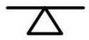
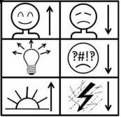
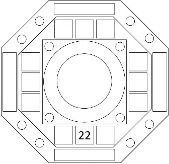
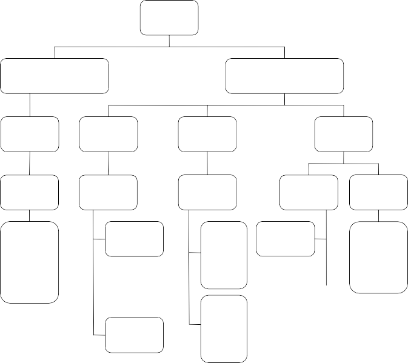
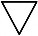
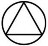
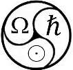

Shinzen Young
Five Ways to Know Yourself
An Introduction to Basic Mindfulness
Shinzen Young
PLEASE NOTE:
Shinzen Young is constantly refining and improving his system of mindfulness. As of July 2016, reflecting his latest innovations and evolutions, the Basic Mindfulness system has been renamed “Unified Mindfulness.”
Please be aware that this “Five Ways To Know Yourself” meditation practice manual represents Shinzen’s “Basic Mindfulness” paradigm.
Shinzen is currently writing a new Unified Mindfulness practice manual to be released late 2016.
Page Intentionally Left Blank
Table of Contents
Introduction to Basic Mindfulness 7
What is Mindful Awareness? 7
Five Ways 10
Three Techniques 12
Noting In a Nutshell 13
More About Equanimity 14
Chapter 1: The Way of Thoughts and Emotions 21
Focus Options 22
See In: Work with your mental images 22
Basic Idea 22
Basic Instructions 22
Hear In: Work with your mental talk. 22
Basic Idea 22
Basic Instructions 22
Feel In: Work with emotional body sensations. 22
Basic Idea 22
Basic Instructions 23
Focus In: Work with all subjective arisings. 24
Basic Instructions 24
Chapter 2: The Way of the Physical Senses 29
Focus Options 29
See Out: Work with physical sight 29
Basic Idea 29
Basic Instructions 29
Hear Out: Work with physical sound. 30
Basic Idea 30
Basic Instructions 30
Feel Out: Work with physical body sensations 30
Basic Idea 30
Basic Instructions 31
Focus Out: Work with all objective arisings 31
Basic Instructions 31
Chapter 3: The Way of Tranquility 35
Focus Options 35
See Rest: Work with visual rest 35
Basic Idea 35
Basic Instructions 36
Hear Rest: Work with auditory rest. 36
Basic Idea 36
Basic Instructions 37
Feel Rest: Work with somatic rest 37
Basic Idea 37
Basic Instructions 37
Focus on Rest: Work with all rest states. 38
Basic Instructions 38
Do Nothing 40
Basic Instructions 40
The Significance of Rest 45
Chapter 4: The Way of Flow 51
Focus Options 52
See Flow: Work with visual flow. 53
Basic Instructions 53
Hear Flow: Work with auditory flow 53
Basic Instructions 53
Feel Flow: Work with somatic flow. 53
Basic Instructions 53
Focus on Flow (Sense Flow Version): Work with all sense flow states. 54
Basic Instructions 54
Focus on Flow (Expansion-Contraction Version) 56
Basic Instructions 56
The Significance of Flow 58
Chapter 5: The Way of Human Goodness 67
Focus Options 68
Themes
Positive Affect 68
Positive Behavior 68
Positive Cognition 68
Positive Ideals 68
Positive Situations 68
Other Positives 68
Basic Instructions 69
Chapter 6: The Five Ways in a Nutshell 77
Chapter 7: A Science of Sensory Experience 81
Chapter 8: Five More Ways! 91
New Focus Options 93
Focus on See: Work with all visual experience 93
Basic Instructions 93
Focus on Hear: Work with all auditory experience 93
Basic Instructions 93
Focus on Feel: Work with all somatic experience 93
Basic Instructions 93
Focus on Everything: Work with all experience 94
Basic Instructions 94
Just Note Gone: Work with vanishings. 95
Basic Instructions for Just Note Gone 99
Chapter 9: The Full Grid 103
Chapter 10: Beauty 107
Chapter 11: Life 113
Chapter 12: The Big Picture 123
Introduction 124
Basic View 127
The Human Condition 129
How Mindfulness Facilitates Total Human Happiness 130
Detailed View 131
The Three Core Skills 133
An Icon for Mindful Awareness 137
Total Happiness 138
Techniques and Focus Options 141
How to Mine Information From The Full Grid 143
How to Give (and Receive) a Guided Practice Session: The Ten Elements of Guidance (23) 149
Deep View 151
Polar Forces that Mold the Practice 153
Polar Forces that Mold Human Life 154
Scales of Nature 155
Mathematics 157
Modern Science and Contemplative Spirituality: The Theoretical Question 159
Hopeful View 161
Modern Science and Contemplative Spirituality: The Practical Question (36-39) 163
Alternative Views 165
Six Questions 167
Eight Rings 168
Philosophy 171
Poetry 175
Page Intentionally Left Blank
What is Mindful Awareness?
Basic Mindfulness is a way to think about, practice, and teach mindful awareness. It is but one system among many that are currently available. Each approach to mindful awareness has strong points and weak points. The strong point of Basic Mindfulness lies in its conceptual clarity and comprehensiveness. Its weak point is its complexity. Also the large number of focus options it offers can be a bit overwhelming at first. It may be helpful to remember that you don’t have to try all or even most of those focus options. If you can find one or two that really work for you, that’s all you need.
Within the Basic Mindfulness System, mindful awareness is defined as:
“three attentional skills working together: Concentration Power, Sensory Clarity, and Equanimity.”
What does this mean? It means that mindful awareness is a skillset, a collection of skills. A skill is an ability that can be improved with practice. Most skills involve some sort of external performance but mindfulness skills are “internal.” Mindfulness skills are a way to process your sensory experience. By sensory experiences, I mean not just outer physical experience like sights and sounds but also your inner experience of thoughts and emotions. So, Mindful Awareness is a certain way to pay attention to what is happening around you and within you. It involves three core skills. Each skill is distinct from the others, and they work together to reinforce each other. Let’s consider what each of those skills involve.
You can think of Concentration Power as the ability to focus on what you consider to be relevant at a given time. You can think of Sensory Clarity as the ability to keep track of what you’re actually experiencing in the moment. You can think of Equanimity as the ability to allow sensory experience to come and go without push and pull. We could represent this symbolically as:
Equanimity
MINDFUL
AWARENESS
Sensory
Clarity
Concentration
| Concentration Power Staying with what is relevant. |
| Sensory Clarity Brightness, high resolution, untangling. |
|
Equanimity A kind of inner balance; A third possibility between pushing the senses down (suppressing) and being pulled away by the senses (grasping). |
Power
The easiest way to understand these descriptions is to look back on your own experience. Have you ever experienced anything like this?
In a certain situation, you suddenly fell into a state of high focus. Things slowed down, you were totally in the groove, in the zone. As a result, you were able to respond with great effectiveness.
If you ever experienced anything like this, then you know what a temporary state of high concentration is. With practice, you can develop the ability to get into that state anytime you want.
Your senses suddenly became unusually bright and clearer. You could detect great detail and everything seemed unusually vivid and rich.
If you ever experienced anything like this, then you know what a temporary state of high sensory clarity is. With practice, you can develop the ability to get into that state anytime you want.
You were going through some physical, emotional, or mental discomfort. For some reason you stopped fighting with the discomfort and just let it flow through you. When you did that, the sense of problem or suffering became much less (or perhaps even totally vanished).
If you ever experienced that, you know what a temporary state of equanimity is. With practice, you can develop the ability to get into that state anytime you want.
If you answered yes to any of the above, then you already have some understanding of how improving the quality of your mindfulness could improve the quality of your life.
Now, let’s consider the reverse situations….
Have you ever experienced anything like this?
There was something important that didn’t go well because of your lack of ability to keep focused on it.
If you ever experienced something like this, then you’re aware of the negative effects of
lacking concentration power. Through systematic practice, you can avoid such problems.
You went through an experience where so much was happening so fast that you couldn’t keep track of it. What part is body? What part is mind? What part is emotion? As a result, you became overwhelmed, flooded, and that overwhelm caused you suffering or made you do something you later regretted…or both.
Such experiences of sensory chaos are examples of the problems that can develop if you lack
sensory clarity. Through systematic practice, you can avoid such problems.
There was something pleasant in your life but you were so worried about losing it or not getting enough of it that you couldn’t really enjoy it.
If you ever experienced something like this, then you know how a lack of equanimity can decrease the satisfaction you derive from pleasure, or perhaps even turn the pleasure into frustration. In other words, you’ve experienced the negative results of non-equanimity.
Through systematic practice, you can avoid such problems.
So that’s the “Good News” of Mindfulness—you can dramatically increase your satisfaction and decrease your suffering by systematically training your attention skills. Such systematic training is referred to as your practice. Practice consists of one or several focus exercises that you do on a regular basis.
Five Ways
In Basic Mindfulness, practice is organized around five themes. I refer to as them as The Five Ways or Five Paths. You don’t have to pursue all five ways but you can if you wish. Taken together, they represent a complete sensory workout routine that trains all your psychological and spiritual muscle groups. Because these five approaches strongly contrast with each other, there is a very good chance that you will be able to find at least one of them that really works for you.
A practice is said to “work” if, in a reasonable time frame, it delivers at least one of the following:
reduction of your physical or emotional suffering
elevation of your physical or emotional fulfillment
deeper knowledge of who you are
positive changes in your objective behavior
a spirit of love and service towards others The Five Ways are:
THE WAY OF THOUGHTS AND EMOTIONS THE WAY OF THE PHYSICAL SENSES
THE WAY OF TRANQUILITY THE WAY OF FLOW
THE WAY OF HUMAN GOODNESS
Each of the Five Ways has five roles.
Each is a general skill-building exercise, a way to strengthen your concentration, clarity and equanimity muscles.
Each is a practical tool, a basic strategy for dealing with life’s challenges and discovering nature’s graces.
Each is a method of knowing yourself, revealing a facet of your spiritual essence.
Each has a past. The Five Ways are a modern and secular reworking of the basic approaches to enlightenment developed historically within Eastern and Western traditions.
Each has a future. The Five Ways are based on a modern understanding of brain function and are therefore ideally suited for scientific research into the nature of consciousness and spiritual growth.
Three Techniques
Four of the Five Ways are explored through a basic focusing technique called Noting. However, the Way of Human Goodness is cultivated through a different basic technique called Nurture Positive. A third basic technique is called Do Nothing. These three techniques can be represented visually by three icons.

Noting
(Based on the International symbol for Laser Light because Noting both clarifies sensory experience and “penetrates” it ).

Do Nothing

Nurture Positive
These three techniques can work together to form one system: Basic Mindfulness. You can learn all three techniques or just one and in whatever order you want.
Simplified versions of these icons are used in the Basic Mindfulness logo:
Noting In a Nutshell
A period of noting practice typically consists of a rhythmic sequence of acts of noting. Each act of noting typically consists of two parts:
You clearly acknowledge the presence of a sensory event.
You focus intently on that sensory event.
During the acknowledging, you have the option but not the requirement to label the event you have acknowledged. To label means to think or say a word or phrase that describes the sensory event you are noting.
The relationship between mindfulness noting and labeling is as follows:
Labeling is designed to facilitate noting.
Noting is designed to facilitate mindfulness.
(How to Do Nothing is described in Chapter 3. How to Nurture Positive is described in Chapter 5.)
More About Equanimity
Equanimity is a fundamental skill for self-exploration and emotional intelligence. It is a deep and subtle concept that is frequently misunderstood and easily confused with suppression of feeling, apathy, or inexpressiveness.
Equanimity comes from the Latin word aequus, which means balanced, and animus, which means internal state. As an initial step in understanding this concept, let's consider for a moment its opposite: what happens when a person loses internal balance.
In the physical world we say a person has lost balance if they fall to one side or another. In the same way, a person loses internal balance if they fall into one or the other of the following contrasting reactions:
Suppression – A state of thought/feeling arises and we attempt to cope with it by stuffing it down, denying it, tightening around it, etc.
Identification – A state of thought/feeling arises and we fixate on it, hold onto it inappropriately, not letting it arise, spread, and pass according to its natural rhythm.
Between suppression on one side and identification on the other lies a third possibility, the balanced state of non-self interference, namely, equanimity.
How to Develop Equanimity
Developing equanimity involves the following aspects:
intentionally creating equanimity in your body;
intentionally creating equanimity in your mind; and
noticing when you spontaneously drop into a state of equanimity.
Intentionally Creating Equanimity in Your Body
To the best of your ability, maintain a continuous relaxed state over your whole body as various sensory experiences wash over and through you.
Intentionally Creating Equanimity in Your Mind
To the best of your ability, let go of judgments about what you are experiencing. Replace them with an attitude of appreciation, acceptance, and gentle matter-of-factness.
An Example
Let's say that you have a strong sensation in one part of your body. You notice that you are tensing your jaw, clenching your fists, tightening your gut, and scrunching your shoulders. Each time you become aware of tensing in some area, you intentionally relax that area to whatever degree possible. A moment later you may notice that the tensing has started again in some area; once again, you gently relax it to whatever degree possible.
As a result of maintaining this whole-body relaxed state, you may begin to notice subtle flavors of sensation spreading from the local area of intensity and coursing through your body. These are sensations that the tension was masking. Now that these sensations are uncovered, try to create a mental attitude of welcoming them, not judging them. Experience them with gentle matter-of- factness. Give them permission to dance their dance, to flow as they wish through your body.
Noticing When You Spontaneously Drop Into a State of Equanimity
From time to time, as we pass through various experiences, we simply “fall into” states of equanimity. If we are alert to this whenever it happens and use it as an opportunity to explore the nature of equanimity, then it will happen more frequently and it will last longer.
For example, let's say that you have been working with a physical discomfort. At some point you notice that even though the discomfort level itself has not changed, it somehow seems to bother you less.
Upon investigation you realize that you have spontaneously fallen into a state of gentle matter-of- factness. By being alert to this and exploring what that state is like, you are training your subconscious to produce that state more frequently.
Although the above descriptions of equanimity involve working with body sensations, the same principle holds for working with visual experience or auditory experience.
To recap, there are three aspects to developing equanimity: creating equanimity in your body, creating equanimity in your mind, and noticing when you spontaneously drop into equanimity. Of these three, the last is by far the most important. That’s why people often practice continuously for long periods of time, i.e. by extending daily practice periods or attending retreats. It’s a numbers game. Sooner or later, you’re bound to fall into equanimity and to notice it because you’re doing formal practice with nothing to distract you. When “you” (the surface self) notice the desirable effect of equanimity, your subconscious (which is where equanimity arises) also notices it. Thus, the deep mind gets trained away from the habit of resistance and into the habit of equanimity. This aspect of mindfulness training is actually a form of classical operant (or Skinnerian) conditioning. Continuous mindful awareness creates a feedback loop from which the primitive circuitry of the deep mind learns to perceive an immediate reward (less suffering and more fulfillment) associated with a certain behavior (not interfering with the sensory experiences that they are producing).
The Effects of Equanimity
Equanimity belies the adage that “you cannot have your cake and eat it too.” When you apply equanimity to unpleasant sensations, they flow more readily and, as a result, cause less suffering. When you apply equanimity to pleasant sensations, they also flow more readily and consequently deliver deeper fulfillment. The same skill positively affects both sides of the sensation picture. Hence the following principle:
(Pain x Equanimity) + (Pleasure x Equanimity) → Psycho-spiritual Purification
Furthermore, when feelings are experienced with equanimity, they assume their proper function in nature, which is to motivate and direct objective behavior. By way of contrast, when feelings are experienced without equanimity, they often drive and distort objective behavior. Thus, equanimity plays a critical role in changing negative behaviors around substances, food, relationships, procrastination, violence, and so forth.
A similar principle holds for the thought process.
Don’t Know (Doubt, Indecision, Confusion) x Equanimity → Intuitive Wisdom
This fact has been independently discovered by three cultures:
Ancient Greece: Epoche - Equanimity with Don’t Know
Medieval Christianity: Docta Ignorantia - Cultivated un-knowing
Tang Dynasty China: Zen Koan practice
Equanimity and Apathy
Equanimity involves non-interference with the natural flow of sensory experience. Apathy involves indifference to the outcome of objective events. Thus, although seemingly similar, equanimity and apathy are actually opposites. Equanimity frees up internal energy for responding to external situations.
Equanimity and Suppression
By definition, equanimity involves radical permission to feel and, as such, is the opposite of suppression. Moreover, internal equanimity gives one the freedom to choose whether to externally express things, depending on what is appropriate to the situation.
Passion and Dispassion
Passion is an ambiguous word with at least four meanings:
intense perception of deep feeling;
unhindered expression of deep feeling;
dynamic behavior that rides on deep feeling; and
suffering and behavioral distortion caused by feelings that are not experienced mindfully.
Due to this ambiguity, one could validly say that people become more passionate (1, 2, 3) as they work through their passions (4).
Physical Analogies for Equanimity
Developing equanimity is analogous to:
reducing friction in a mechanical system (Equanimity =1/F);
reducing viscosity in a hydrodynamic system (Equanimity =1/µ);
reducing resistance in a DC circuit (Equanimity =1/R);
reducing impedance in an AC circuit (Equanimity =1/Z);
reducing stiffness in a spring (Equanimity =1/k); and
A solution being thixotropic as opposed to rheopectic. (Thixotropic substances, such as paint, thin out when they get stirred. By way of contrast, rheopectic substances, such as corn starch, thicken up when they get stirred.)
Extending these metaphors, perfect equanimity would be analogous to “superconductivity” within all your sensory circuits.
Another Synonym for Equanimity
Love.
Equanimity in Christianity
Early and Medieval Christianity placed a great value on equanimity. Indeed it was considered one of the primary Christian virtues. This is because Christianity viewed itself as a path of radical spiritual cleansing (katharsis), with equanimity as the main tool for achieving this goal. Many of the church fathers wrote in Greek. In Greek, there are three words for equanimity:
nepsis (literal meaning: sober observation);
ataraxia (literal meaning: freedom from upset); and
apatheia (literal meaning: dispassion. Notice that, in this usage, apatheia does not equal apathy!).
In Christianity, the theory of purification through equanimity constituted a major branch of spiritual study known technically as “Ascetical Theology.”
Equanimity in Judaism and Islam
The Hebrew word for equanimity is hashlamah, which is directly related to the word for peace (shalom) and the word for completeness (shlemut). In a sense, three Hebrew letters used in the spelling of these words (i.e., shin, lamed, and mem) contain the entire spiritual path: when one is fully present (shalem) and equanimous (hashlamah) with what is, then what is presents itself as God's peace (shalom).
The term Islam is usually interpreted to mean the peace that comes with surrender (Arabic s-l-m = Hebrew sh-l-m). It is the Arabic cognate of the Hebrew word hashlamah. A Muslim literally means “one who has become equanimous.”
Page Intentionally Left Blank
Chapter 1:
The Way of Thoughts and Emotions
Page Intentionally Left Blank
This Way involves tracking your subjective experience in terms of visual thoughts (mental images), internal conversations (mental talk), and emotional body sensations. It’s about appreciating yourself just as you are.
As a psychological practice, this Way allows you to break negative states into small manageable pieces, thus loosening their power over you. By “negative states” I mean things like difficult emotions, limiting beliefs, judgments, urges leading to unproductive behaviors, and so forth. By “manageable pieces” I mean individual images, individual self-talk phrases, and specific body locations where the emotional sensations are arising. Learning to focus on just one of these at a given moment will reduce your sense of overwhelm. You stop being like a ping-pong ball pummeled about by words in your head, emotions in your body and pictures on your mental screen.
As a psychological practice, this Path can also be helpful in that it allows you to keep contact with who you are even in the presence of an impactful other, i.e., it strengthens psychological boundaries in a healthy way. This contrasts with and complements its effect as a spiritual practice.
As a spiritual practice, this Way allows you to become free from your small self by completely appreciating and accepting your small self. You literally love your self to death! The small self is the sense that your identity is limited to your mind and body. When you can clearly separate your subjective states into mental images, mental talk, and emotional body sensations, those states will be a home where you can live but from which you can venture out—venture out into a deeper, broader sense of identity. By way of contrast, when mental image, mental talk, and emotional body sensations get tangled and meshed, they become a prison that confines your identity. With enough practice, this Way will allow you to break free from the prison of small self.
The Way of Thoughts and Emotions represents a modern reworking of the early Buddhist “divide and conquer” strategies such as the Five Aggregates or the Four Foundations. In terms of modern neuroscience, it is a way of detecting when your brain’s “default mode” activates, pulling you into memory, planning, fantasy and judgment.
Focus Options
Basic Mindfulness offers four options for exploring your thoughts and emotions: three options to focus individually on them and one option to focus collectively on them. All of these options utilize the noting technique.
See In: Work with your mental images.
Basic Idea
Continuously track any visual thoughts that may come up spontaneously. If for a period of time no visual thoughts come up, enjoy that as a form of visual rest.
Basic Instructions
Whenever you have a mental image, note that as “See In.” Whenever you have no mental image, note that as “See Rest.” Whenever all or part of the image (or visual rest) drops away or drops off, note that as “Gone.”
Within this context, “See Rest” refers to looking at a blank mental screen. When your eyes are closed, the darkness/brightness in front of and/or behind your eyelids represents that blank mental screen. When your eyes are open, looking at a blank mental screen means looking “into” image space but not “at” any images (because at that moment, there are no images).
Hear In: Work with your mental talk.
Basic Idea
Keep your attention in your head or at your ears so you can detect the presence or absence of mental talk. If mental talk occurs, listen to it with detachment, neither suppressing it nor holding on to it. If no mental talk occurs, listen to the quiet in your head as a pleasant restful state. The Hear In option trains you to do two things:
listen to your mental talk without identifying with it (thus, the technique develops equanimity); and
detect mental talk at the very instant it comes up. That way in daily life you won't be hijacked by it before you realize it (thus, this focus option develops sensory clarity).
Basic Instructions
Whenever you have mental talk, note that as “Hear In.” Whenever you have no mental talk, note that as “Hear Rest.” Whenever a burst of talk drops off or drops away, note that as “Gone.”
Feel In: Work with emotional body sensations.
Basic Idea
At any given instant, you might be experiencing strong emotion, mild emotion, or no emotion whatsoever. By emotion I mean things like anger, fear, sadness, embarrassment, impatience, disgust, interest, joy, love, gratitude, smile, laughter, and so forth.
Here are some examples of strong emotions vs. mild emotions.
Strong Emotional State Corresponding Mild Emotional State
Rage Slight irritation
Terror Slight nervousness
Deep Shame Mild self-consciousness
Ecstatic joy Hint of glow
When you experience a strong emotion it will almost certainly involve clearly detectable body sensations in addition to mental talk and mental images. Those body sensations are the primitive "juice" of the emotion. The label for any emotional body sensation is “Feel In.” It's important to be able to experience emotional sensations in a clear and open way; otherwise, they may subtly distort your perception and behavior.
Of course, you may sometimes experience no emotion (i.e., you may be emotionally neutral). Then, by definition your body is free from all emotional sensations. Your body is emotionally restful. We'll use the phrase Feel Rest for any state of rest in the body, whether it is physical (settling into a posture, relaxing muscles) or emotional (the awareness that our body is emotionally neutral).
So Emotional Body Sensations are easily detected when the emotional experience is intense. But how about when an emotion is very mild? Are there still changes that can be detected in your body?
Sometimes yes, sometimes no. Either is natural, either is fine. But if such subtle emotional body sensations do happen to be present, it’s important to be able to detect them. Tiny sensations in the emotional body can cause huge distortions in objective behavior. Subtle is significant!
Basic Instructions
Whenever your experience is in any way emotional, that emotion may involve body experience. If so, note that as “Feel In.” When you note Feel In, the emotional body sensation you’re noting may be a well-defined type or the type may be vague. It may have a clear cause or the cause may be unknown. Any of these possibilities are fine. They all count as Feel In.
If you are without emotion or you have emotion but it does not involve your body, note that as “Feel Rest” and focus on the fact that your body is emotionally peaceful.
If all or part of a “Feel In” sensation drops away or drops off, note that moment as “Gone.”
Focus In: Work with all subjective arisings.
Basic Instructions
Let your attention broadly float between mental images, mental talk, and emotional body sensations. If two or all three of these are active at the same moment, just choose one to note. It doesn’t matter which one. If none of these is active, then drop into “Do Nothing” (see Chapter 3, Section 5) until one of them re-activates. If something you’re noting drops away or drops off, note that moment as “Gone.”
The standard labels are:
“See In” for mental images;
“Hear In” for mental talk;
“Feel In” for any emotional body sensations; and
“Gone” for a moment of drop away or drop off.
We can summarize these four focus options as a column.
Focus Options for the Way of Thoughts and Emotions
See In: Explore your mental images |
Hear In: Explore your mental talk |
Feel In: Explore your emotional body sensations |
Work Individually
Focus In: Explore all inward activity
Work Collectively
You can learn one, two, three or all four boxes in the column. If you learn all four, you can apply the strategy of alternating between “drilling down” and “backing up.”
Drilling down means working individually with one sensory element at a time: mental images, mental talk or emotional body sensations. Backing up means working collectively and broadly floating among all three forms of subjective activity. The options to drill down are represented by the upper three boxes, and the option to back up is represented by the bottom box.
When you work individually, you increase concentration, clarity, and equanimity in just one element for a while. Because you’re working just with that one element at a time, it may be relatively easy to do. After doing that, when you back up and work with all of the elements, the whole system is likely to function in a smoother, more effective, and more satisfying manner because each element has been tuned up individually.
Within the noting technique, focus options that involve individual elements are named by modality and theme. For example, “See In” as the name of a focus option indicates that you’re working with the visual modality and the theme of inner activity, i.e., inner images. By way of contrast, focus options that involve broadly floating among several sensory elements begin with the word “Focus.” So “Focus In” implies working with the whole inner activation system.
Page Intentionally Left Blank
Chapter 2:
The Way of the Physical Senses
Page Intentionally Left Blank
In this approach, the basic idea is to anchor yourself in the present moment by focusing on external sight, external sound and physical (i.e., non-emotional) body sensations. This is based on a practice commonly given to new monks in Zen temples, allowing them to remain in a meditative state while effectively performing their daily tasks.
At a psychological level, this is similar to an approach known in psychotherapy as “distraction.” When a client experiences meltdown in a session, the therapist may encourage them to ground themselves in external sights, sounds and so forth. A similar distraction strategy is sometimes used by runners to take their mind off fatigue and boredom. However, there is a subtle but highly significant difference between focusing outward as a distraction and focusing outward as a Path. As a Path, it’s not just a momentary coping strategy. It is a sustained and systematic apparatus designed to permanently increase your base level of concentration, sensory clarity and equanimity.
The ultimate aim is to experience oneness with the outside world.
The Way of Thoughts and Emotions allows you to understand how image, talk, and emotional sensations create the subjective world of past, future and fantasy; the Way of the Physical Senses is a tangible strategy for pulling you out of past, future, and fantasy and into the Power of Now.
Focus Options
Basic Mindfulness offers four focus options for exploring the physical senses—three options to focus individually and one option to focus collectively. All of these options utilize the noting technique.
See Out: Work with physical sight.
Basic Idea
Focus continuously on external sights, letting your attention shift from one visual object to another. If you get grabbed by a particular object, let your attention shift from place to place within that object. Each time your attention shifts from one object to another or from one place in an object to a different place in that object, note that shift as a new sight experience.
If your eyes get tired, intentionally defocus your gaze for a moment and then return to noting sights.
The idea is to use the natural attractive power of external sights to help you stay anchored in the here- and-now. To facilitate that happening, it's okay to intentionally look at pleasant objects or scenes that you enjoy, for example, note See Out while walking in nature.
Basic Instructions
With your eyes open, let your line of sight freely float from direction to direction, object to object, or place to place within an object. Each time your line of sight shifts, note “See Out.” It does not matter if
the shift is spontaneous or intentional. Neither does it matter if the shift is due to a physical movement of the eye or just a movement in attention.
If, as your line of sight shifts to a new sight, you happen to note the preceding sight drop away or drop off, note “Gone.”
If at some point you need to rest, it’s okay to briefly defocus your eyes. Note that experience as “See Rest.”
Hear Out: Work with physical sound.
Basic Idea
Focus continuously on external sounds, either those naturally occurring around you or sounds that you like and have chosen to play through a speaker, headset, etc. If for a moment there are no sounds, focus on the silence as a restful state.
This option can create an experience of being anchored in the here-and-now of sound.
In the most intense case, this leads to an experience of merging with the sound—an exhilarating state of inside and outside becoming one. Most people have had experiences like that but only occasionally and briefly. The Hear Out option shows you how to have such experiences for an extended period of time and whenever you want.
Basic Instructions
Whenever you’re aware of sound, note “Hear Out.” If all or part of the sound drops away or drops off, note “Gone.” If there is no sound in any direction, note “Hear Rest.”
Feel Out: Work with physical body sensations.
Basic Idea
Focus continuously on physical-type body sensations. If emotional-type body sensations or thoughts, or external Sights and Sounds pull you away, gently come back to the physical side of your body experience.
Common examples of physical type body sensations include:
hot and cold;
muscles working;
pain;
non-emotional breathing;
non-emotional pulse;
contact with clothes, air, coverings, chair, cushion;
hunger and thirst;
gas and bladder sensations;
tiredness, sleepiness, weakness, and dizziness;
itches and aches;
pressures;
nausea;
muscle tension; and
cramping.
Notice that, by our very broad definition, pain and other sensations associated with illness or injury (nausea, fatigue, pressure, heat, and so forth) are seen as specific types of Physical Body Sensation.
At any given moment, Physical Body Sensations may arise in just one location, in several locations, or over your whole body at once. Also there may be just one "flavor" of Physical Body Sensations present or several flavors of Physical Body Sensations present at a given time. When you do Feel Out you can let your focus broadly float among locations and types of sensation, or control where you focus and on what type of sensation you focus. All that is required is that you stay with the physical side of your body experience.
So when you do this option, if pleasant soothing Feel Out sensations (such as warmth or neutral contact with your clothes) are available and you wish to focus on them, you can. If an unpleasant Feel Out sensation (such as pain or fatigue) is present, you may find that your attention is constantly drawn to it. That's okay; simply note it over and over again, pouring openness and acceptance into it each time you note.
Basic Instructions
Whenever you’re aware of a physical body sensation, note “Feel Out.” If all or part of that sensation drops away or drops off, note “Gone.” If for a period of time you are unaware of physical sensation in your body, note that as “Feel Rest.” Recall that in this case “Out” means that a sensation is of physical origin. Its location may be anywhere within or upon your body.
Focus Out: Work with all objective arisings.
Basic Instructions
Let your attention broadly float between physical sights, physical sounds, and physical body sensations. If two or all three of these are available at the same moment, just choose one to note. It doesn’t matter which one. If your eyes are closed, there will only be the physical sounds and physical body sensations to focus on. If none of these is active, then drop into “Do Nothing” until one of them reactivates. If something you’ve been noting drops away or drops off, note that moment as “Gone.”
Focus Options for the Way of the Physical Senses
See Out: Anchor yourself in external sights |
Hear Out: Anchor yourself in external sounds |
Feel Out: Explore your physical body sensations |
Work Individually
Focus Out: Explore all outward activity
Work Collectively
You can learn one, two, three or all four boxes in the column. If you learn all four, you can apply the strategy of alternating between “drilling down” and “backing up.”
Drilling down means working individually with one sensory element at a time: Physical Sight, Physical Sound or Physical Body Sensations. Backing up means working collectively and broadly floating among all three forms of objective activity. The ways to drill down are represented by the upper three boxes, and the option to back up is represented by the bottom box.
When you work individually, you increase concentration, clarity, and equanimity in just one element for a while. Because you’re working with just that one element at a time, it may be relatively easy to do. After doing that, when you back up and work with all of the elements, the whole system is likely to function in a smoother, more effective, and more satisfying manner because each element has been tuned up individually.
Chapter 3:
The Way of Tranquility
Page Intentionally Left Blank
If you say “meditation” to the average person, they will probably get the mental image of someone sitting cross-legged on the floor trying to mellow out and release stress. Many, perhaps most, traditional forms of meditation develop concentration power by focusing on simple, soothing experiences. In traditional Buddhism, this is called tranquility (samatha) or absorption (jhana) practice. In Christianity, it is called Prayer of Quiet or Hesychasm. There is a good reason for the central role of tranquility practices of both East and West. They create a positive feedback loop. The more you concentrate on soothing rest, the more soothing it becomes, thereby motivating you to concentrate even more. This positive learning loop creates an accelerating growth (snowballing growth) of concentration power.
Within the theme of tranquility one may distinguish Relative Rest from Absolute Rest. Relative Rest is rest that can be described in terms of the three sense modalities. It involves finding or creating visual rest, auditory rest, and somatic rest. One might say that the Relative Rest approach involves turning towards restful states. By way of contrast, the Absolute Rest approach involves dropping the intention to turn anywhere. In the Basic Mindfulness System, Relative Rest is developed through specific forms of Noting. Absolute Rest is developed through the Do Nothing technique.
Keep in mind that the terms Relative Rest and Absolute Rest are not a value judgment. There is something to learn from both approaches and different people (or the same person at different times) may be drawn to one, the other or both.
Focus Options
Basic Mindfulness offers five options for exploring the Way of Tranquility: Four involve noting and the fifth is Do Nothing.
See Rest: Work with visual rest.
Basic Idea
Focus on the visually restful state that comes about when you let go of involvement with outer sights and inner images. There are two ways to do this. One works only when your eyes are closed; the other works for eyes open or closed.
Eyes closed: Focus on the darkness, brightness, or mixture of darkness and brightness that you see in front of and/or behind your eyelids when you close your eyes. We’ll refer to this form of visual rest as “grayscale blank.”
Eyes open: Intentionally defocus (soft focus) your gaze. "Look" but without being too concerned for what you're seeing.
Most people find the eyes-closed version quite easy to do. The eyes open version is often a bit more challenging. Both versions are known to create "alpha waves" in the brain. Alpha waves represent a state that is both restful and alert.
Most people will not detect vanishings (Gone) in the defocus form of visual rest (although some people may). However, when you’re focusing on the eyes-closed grayscale blank, patches of dark or bright may disappear. Such a disappearance is a well-defined example of “Gone.”
Basic Instructions
Every few seconds, note “See Rest.” With your eyes closed, you can See Rest by focusing on the darkness and/or brightness in front of and/or behind your eyes. With your eyes open, you can See Rest by defocusing, soft focusing your eyes. (If all or part of the visual rest drops away or drops off, note “Gone.”)
Hear Rest: Work with auditory rest.
Basic Idea
Continuously focus on auditory restful experiences—mental quiet inside your head or physical silence around you.
Everyone has had the experience of going from a noisy location into a quiet one. For just a moment you can actually "hear" the silence. Then you get accustomed to the silence and don't hear it explicitly any more. But with just a little practice, you can learn to hear the silence around you anew moment- by-moment. This is one way to enjoy a soothing auditory restful experience.
Everyone is aware of mental chatter—the "non quiet" in their head. What most people do not know is that the chatter does not continue unbroken. There are times when it spontaneously stops. If you happen to notice those silent moments, you can focus on them as a form of auditory rest.
When does mental chatter spontaneously vanish into mental quiet? There are two common circumstances:
when there is a sudden impact from the external world such as a physical Touch or a physical Sound; and
when you intentionally listen for mental talk. (The mouse doesn't come out because the cat is watching )
But what if you're in a noisy environment where the sound never stops? And what if the mental talk seldom if ever goes silent? Well, it may still be possible to Hear Rest. External sounds come from any one of six directions (front, back, left, right, above, and below). If even one of those directions has no sound, then you can Hear Rest by listening in that direction.
Yet another way to Hear Rest is to intentionally listen to white noise.
And what if it is impossible to find or create auditory rest? Well, in that case, you won't be able to use this focus option. However, if you wish to explore the theme of rest, you can learn Feel Rest (focus on body rest) or See Rest (focus on visual rest). Feel Rest and See Rest are always available regardless of circumstances.
Most people will not detect “Gone” of Hear Rest because it is already essentially an absence of auditory experience (but some people report that they can detect the disappearance of an absence as a tangible moment of vanishing).
Basic Instructions
Whenever you’re aware of the absence of sound in any of the six directions around you, note that as “Hear Rest.” If you’re aware of an absence of mental talk, note that also as “Hear Rest.” (If the drop away of Hear Rest is a tangible experience for you, note that as “Gone.”)
Feel Rest: Work with somatic rest.
Basic Idea
Focus on physical and emotional restful states in your body. Physical Rest in your body refers to things like settling in to a posture, relaxing muscles, and so forth. Emotional Rest means detecting the absence of emotion in your body.
There are many ways of feeling Rest.
Learn to find it:
By focusing on how your muscles relax into a still posture.
By noticing how your core muscles (rib cage and diaphragm) automatically relax each time you breathe out.
By noticing when your body is without emotional Feeling.
Learn to create it:
By stretching up and settling into your posture.
By intentionally relaxing individual body parts (face, jaw, shoulders, arms, and so forth).
By breathing into emotional sensations to soothe them (without, however, trying to beat them down!).
Most people will not detect “Gone” for forms of somatic rest that are an absence of sensation, such as emotional neutrality. However, physical relaxation is a tangible sensation in the body that may drop off or drop away. So for that form of “Feel Rest,” it may be possible to note “Gone.”
Basic Instructions
Tune into the restful side of your body experience, physical relaxation, emotional peace and so forth. When you are aware of rest in your body, note that as “Feel Rest.” Restful experience may be in a small part or a large part of your body or may cover your whole body. It may be intense or subtle. Any
pattern is fine. Enjoy that restful experience. (If the rest you’re noting drops away or drops off, note that moment as “Gone.”)
Focus on Rest: Work with all rest states.
Basic Instructions
Let your attention broadly float between “See Rest,” “Hear Rest,” and “Feel Rest.” You can do this with exclusive or inclusive emphasis. With exclusive emphasis, if more than one type of Rest is available at a given instant, just choose one to note at that instant. For example, if visual rest and auditory rest are both present at a given instant, just choose to note “See Rest” or “Hear Rest.” With inclusive emphasis, if two types of rest are available, note both (e.g., “See Rest and Hear Rest”). If all three are available, note all three (e.g., “All Rest”). If the rest you’re noting drops away or drops off, note that moment as “Gone.”
The standard labels are:
“See Rest” for mental blank or defocused gaze;
“Hear Rest” for mental quiet or physical silence;
“Feel Rest” for physical relaxation or emotional peace; and
“Gone” for a moment of drop away or drop off.
If you’re noting with inclusive emphasis, use “And” when you note two types of rest at the same time. For example: “See and Feel Rest.” Note “All Rest” if you’re noting all three types at the same time.
Remember, a rest state can be something that is already there or something you intentionally create.
See Rest: Enjoy visual rest |
Hear Rest: Enjoy auditory rest |
Feel Rest: Enjoy body rest |
Focus Options for the Way of Tranquility
Work Individually
Focus on Rest: Enjoy all types of rest
Work Collectively
You can learn one, two, three or all four boxes in the column. If you learn all four, you can apply the strategy of alternating between “drilling down” and “backing up.”
When you “back up” (i.e., do Focus on Rest), you have two options as far as noting goes: exclusive noting and inclusive noting. With exclusive noting, if two or all three of the restful states are available at a given instant, choose just one to note at that instant. Most people prefer exclusive noting for Focus In and Focus Out. But many people prefer inclusive noting for Focus on Rest and Focus on Flow. Each option has advantages. Exclusive noting is simpler. Inclusive noting is more complicated but allows you to get a delicious sense of being bathed in two or perhaps all three restful flavors at the same time. Here is a summary of the difference.
The labels used with exclusive noting of Focus on Rest are:
“See Rest”
“Hear Rest”
“Feel Rest”
“Gone”
The labels used with inclusive noting of Focus on Rest are:
“See Rest”
“Hear Rest”
“Feel Rest”
“See Rest” and “Hear Rest”
“See Rest” and “Feel Rest”
“Hear Rest” and “Feel Rest”
“All Rest”
“Gone”
Do Nothing
Do Nothing is an approach to rest that involves little or no effort. You don’t even have to intentionally note restful states. It is totally passive and easy going.
This approach has been discovered and re-discovered many times and in many places, so it is known by many different historical names. Here are a few:
Choiceless Awareness (term used by Krishnamurti and others);
Open Presence (term used by neuroscientists);
Just Sitting (according to some definitions of that phrase);
Dzogchen/Mahamudra (in Tibet);
Passive Contemplation (in Christianity); and
Non-dual Awareness (according to some definitions of that phrase).
Do Nothing could also be called “The Technique of No Technique.” Because this sounds a bit self- contradictory, you might suspect that there are a few subtle points involved in the instructions. Indeed, that is so.
Let’s start with the basic instructions (which are quite short). Then we can clarify the subtleties.
Basic Instructions
Let whatever happens, happen.
Whenever you’re aware of an intention to control your attention, drop that intention.
Now for the subtle points. There are two sides to understanding those subtleties. First, you need to understand what the instruction requires. (Yes, there is a very small amount of doing in Do Nothing. ) Second, you need to understand what the instruction does not require (but what you might think it requires and thus make something that’s easy into something that’s hard).
Let’s start with the phrase “intention to control your attention.”
Sometimes your attention may be drawn to an experience spontaneously without control. The experience just happens. At other times, you may find yourself intentionally controlling the direction or content of your experience, trying to keep it on a certain thing or pull it away from some other thing.
This is true of all sensory experience including thoughts (recall: in Basic Mindfulness, thought is defined as mental image, mental talk, or both simultaneously). Sometimes a thought just arises on its own. At other times, you may find yourself intentionally thinking about a topic, intentionally pulling away from a topic, or actively directing a thought after it has arisen spontaneously.
During a period of Do Nothing practice, if you notice that you’re intentionally directing your awareness, you drop the intention to do so. You do this whether that intentional direction involves an objective arising (such as sights, sounds, physical body sensations), a subjective arising (such as mental images, mental talk, or emotional body sensations), a restful state, or a flow state.
Notice that what you’ve been asked to drop is the intention to direct awareness. You’re not being asked to drop the thing that you happen to be aware of. So if a thought comes up spontaneously, you don’t have to drop that thought. But when you find yourself controlling that thought, drop that intention to control. Do Nothing never asks you to drop experiences. It only asks you to drop intentionally directing how your attention moves within experiences. And you only have to drop an
intention when you happen to notice the presence of an intention, which may or may not be very often. So, when you Do Nothing, you may have a lot of sensory activity and you may go unconscious and get caught up in things quite a bit. That’s okay! Whenever you notice an intention to do anything about all of that, drop that intention.
But what exactly does it mean to “drop” an intention? It means to let go of that intention in that moment. So, dropping is not the same as getting rid of. The intention might immediately reappear over and over. That’s perfectly fine.
But what if you cannot drop it for even a moment? Then you don’t have to! Here’s why. We’re going to define intention within this context to mean something that is totally voluntary. If you cannot drop it for even a moment, then, by our definition, it is not really part of your free will. It’s happening to you and you don’t need to drop it.
Notice also that the instructions do not ask you to continuously check for whether you’re intentionally controlling your awareness or not. To continuously check for the presence or absence of such intention would itself create a continuous intention! When you Do Nothing you may notice intention to control your awareness frequently, occasionally, or hardly ever. Any of these possibilities is fine.
As you can see, anyone can do the Do Nothing technique “perfectly” because its goals are extremely modest. Of course, doing the technique perfectly does not mean that your experience of it will be pleasant, restful, or productive. That’s quite a different issue. A “perfect” period of Do Nothing practice may be essentially indistinguishable from a perfect storm of Monkey Mind.
So, what to do when Do Nothing does nothing for you? Do something else! Basic Mindfulness gives you almost two dozen other focus options.
A general principle is:
If Do Nothing makes you too spacey, try Noting for a while.
If Noting makes you too racy, try Do Nothing for a while.
Now you can appreciate the initial phrase in the instructions: “Let whatever happens happen.” With this technique, there is no attempt to achieve any particular effect. If the Do Nothing approach happens to work for you at a given time, pursue it; if it doesn’t, don’t.
Here are some guidelines and encouragements I give when I lead people in Do Nothing practice.
If you have an intention to get focused or settled, drop that intention.
If you have an intention to get centered or meditate, drop that intention.
If you have an intention to stay with a good state or fix a bad one, drop that intention.
If you have the intention to be clear or concentrated or in equanimity, drop that intention.
If you drop into equanimity, good. If you notice you’re trying to find or maintain equanimity, drop that intention.
If you drop into clarity, good. If you notice you’re trying to find or maintain clarity, drop that intention.
If you drop into concentrated space, good. If you notice you’re trying to find or maintain concentration, drop that intention.
If for a while you have no intentions to control attention, good, just hang out for as long or short as that may last.
If you get dissociated or confused, let go of any intention to do something about that.
If an intention to make sense of things arises, drop that intention.
Remember, if you cannot drop an intention, it’s not really voluntary by our definition so you don’t need to drop it.
Remember, by definition, dropping does not require any struggle. If you have to struggle to drop it, you don't need to drop it.
If you find this centering, good, that’s a sign you’re doing it right.
If you find this decentering, good, that’s a sign you’re doing it right.
At first the Do Nothing approach might be a bit confusing and uncomfortable, but after a while, you may begin to get a sense that although you are not directing yourself towards something, you are being directed towards something. Or, more accurately, you’re being directed towards Nothing— Nothing par excellence, The Source. The Groundless Ground. This has some similarities to Just Note Gone (See Chapter 8). Just Note Gone directs you to the Source. Do Nothing directs the Source to you. In Do Nothing, you stop trying to get to IT and give IT a chance to get to you. That’s why some people refer to the Do Nothing approach as “Call Off the Search.” On the one hand, the Buddha put a lot of emphasis on pursuing “The Noble Quest.” Which is the right point of view: Pursuing The Noble Quest or Calling Off the Search? Both, not neither! In an attempt to be balanced, the Basic Mindfulness System provides you with ways to explore both.
The Significance of Rest
In our classification of sensory experience, each sensory space is assigned a distinctive restful aspect in addition to its more obvious active ones. There are several reasons for including these restful categories in what we note. Here are a few of them.
Focus on Rest can:
Create a positive feedback loop. Focusing on restful states can create a positive learning loop that strengthens your concentration power. The better you concentrate on restfulness, the better you feel, thereby motivating you to concentrate even better.
Create equanimity. Restful states create a kind of container within which the active states can come and go with less resistance and grasping. In other words, the restful states tend to induce equanimity, and equanimity is one of the central goals of mindfulness practice.
Give you something fun to do anytime during the day. The restful states are frequently present in daily life, but most people fail to notice and enjoy them because they have neither the concepts nor the vocabulary needed to recognize them. Now that you have terms like See Rest, Hear Rest and Feel Rest, you are in a position to notice and appreciate when these states occur spontaneously during the day.
Deepen your sensory fulfillment. Learning to detect, enhance, and concentrate on restful states increases your ability to be fulfilled independent of circumstances. Restful states can be cultivated as a kind of self-contained contentment that you can access any time, independent of external circumstances. This becomes important when a life situation deprives you of ordinary external sources of fulfillment for a period of time. And it becomes crucial to your very existence if the conditions of your life become permanently and severely limited (for example, by chronic illness, inescapable responsibilities, etc.).
Help you to stay deep while you keep track. Noting restful states is, technically speaking, a form of shamatha vipashyana yuganaddha. What this imposing Sanskrit phrase signifies is an approach to meditation that intertwines (yuganaddha) the tranquilizing side of the practice (shamatha) with the clarifying side (vipashyana). Explicitly including restful states as standard objects to be noted along with the more obviously active ones brings a sense of tranquility into the cultivation of clarity. Conversely, discriminating different types of restfulness (See Rest, Hear Rest, Feel Rest) brings clarity into the cultivation of tranquility.
The reason I like the yuganaddha approach is that it solves one of the most common complaints that people have when they try to do mindfulness as opposed to other simpler forms of practice such as mantra, breath focus, choiceless awareness, and so forth. The complaint usually runs like this.
“When I just focus on the breath (mantra, choiceless awareness, etc.) it seems like I am in a state of meditation. I get a sense of going deep. When I try to note my experience, I can do it, but it does not
feel like I’m in a meditative state. I can’t seem to go into deep states and keep track of details at the same time.”
Including restful states in what you note allows you to go into deep states while still making distinctions (i.e., distinguishing somatic versus visual versus auditory rest).
Bring clarity to the (potentially) spacey experience of “nothing much is happening.” If “nothing much is going on,” there is still something you can productively focus on—the restful flavors. In other words, when “nothing” is happening, six highly significant things are happening.
Your mental screen is blank
Your head is quiet
Your eyes are defocused
Your ears are defocused
Your body is physically relaxed
You body is emotionally peaceful
Make Mindfulness Practice a soothing, gentle process. Including the restful states as objects to be noted addresses another common complaint about mindfulness: being mindful may make you painfully aware of how uncomfortable your body is and how chaotic your mind is (leading to a disinclination to be mindful!). Of course, from a certain perspective, the sobering discovery of how uncomfortable one really is may be useful in that it could motivate one to find a way out of that misery. On the other hand, there is nothing wrong with adding a little sweetness and gentleness to leaven the process. Shamatha vipashyana yuganaddha represents a “kinder, gentler form of ego death.”
Make it easy to detect Flow. The restful states can be looked upon as attenuated (i.e., “thinned out”) versions of the active ones. In other words, physical relaxation, emotional peace, mental blank, and mental quiet are very toned down versions of physical body sensation, emotional body sensation, mental image, and mental talk. Body sensations, mental images, and mental talk weave together to create a gross sense of self. Physical relaxation, emotional peace, mental blank, and mental quiet weave together to create a thinned out subtle sense of self. This subtle, attenuated version of self is much more porous and penetratable than the gross one. Likewise, defocusing your eyes and ears (objective forms of See Rest and Hear Rest) thins out the materiality of the world around you. The classic “absorption” path to enlightenment involves abiding in an attenuated, restful self, then penetrating it with so much clarity that it dissolves into flow, and eventually vanishes, leading to insight into No Self—the heart of Buddhist enlightenment.
Create the experience of “being meditated.” It is not hard to see that active states can trigger (i.e., set off) other active states. For example, an external physical sound will often trigger a mental image of
its source. Or negative mental talk in your head may trigger uncomfortable emotional sensation in your body.
Somewhat more subtle, but highly significant, is how one restful state may trigger another restful state. For example, (with your eyes closed) looking at the soothing darkness or brightness in image space may trigger physical relaxation in body space. Or listening to mental quiet in your head may trigger emotional peace in body space.
In fact, you may discover that a certain restful state consistently triggers a certain other restful state. Knowing your own patterns of “rest to rest interactions” allows you to ride on delicious sequences of predictable pleasantness that repeat themselves over and over. For example:

Mental Blank (A form of See Rest)

Mental Quiet (A form of Hear Rest)
Physical Relaxation (A form of Feel Rest)
OR

Emotional Peace (A form of Feel Rest)
Emotional Peace (Another form of Feel Rest)
Physical Relaxation (Another form of Feel Rest)


Mental Physical Mental
Blank Relaxation Quiet
Things get really interesting when the tail of such a sequence circles back to re-trigger the head. For example:
This creates a self-sustaining positive feedback loop that takes you deeper and deeper without the need for a “you” (i.e., a meditating self) to keep it going! You just sit back and let nature do its thing until you disappear for awhile into “the peace that passeth understanding.”
No Rest, No Problem!
Having said all this, however, it is of the utmost importance that you not develop a preference for the restful states over the active ones. When restful states are available, you can use them as doorways if you wish. When restful states are not available, let yourself become utterly fascinated with the active aspects of your senses: See In, See Out, Hear In, Hear Out, Feel In, Feel Out.
Page Intentionally Left Blank
Chapter 4: The Way of Flow
Page Intentionally Left Blank
Focusing on Flow is a way of working with what might be called the dynamic or energetic aspect of sensory experience. The word dynamic refers to change and the forces that can create change. In classical physics, there is a strong link between the concept of force and the concept of change. You may not be able to see the wind itself, but you can track it in real time and in great detail by watching how the loosely articulated leaves of a Cottonwood tree shimmer. (This is no doubt why plains Indians consider that tree sacred and make it central in their highest ceremony, the Sundance.)
Flow refers to any change in a sensory experience other than abrupt vanishing. Vanishing (“Gone”) is a very special case of dynamic behavior that is given its own category (see Chapter 8).
By its very definition, flow is not something unusual or mysterious. If a sensation changes in intensity (i.e., grows stronger or weaker), that’s flow! If your thoughts speed up or slow down, that’s flow! If mental images fade in and fade out, move, morph or animate, that’s flow!
Also, any force that pushes out or pulls in is considered to be a form of flow. Even uncomfortable inward or outward pressures are considered forms of flow. Furthermore, the forces of distraction that scatter your attention and the forces of obsession that grip your attention can—from a very deep perspective—be looked upon not as problems but simply as forms of expansive and contractive force, i.e., flow.
So, Flow is not a special type of sensory experience. It is something that may (or may not) be present within any given sensory experience. If there is any awareness of movement or a force within an experience, then that experience is “flowing.” Flow may occur within visual, auditory, or somatic experience. It may occur within an active or restful experience. It may occur within a subjective or objective experience.
An experience that is not flowing is referred to as “stable.”
Flow and stability are both parts of nature. One is not considered better than the other, but we’ll work with them in different ways:
If something seems stable, slow down your internal clock to match its timelessness.
If something is flowing, let that flow fascinate you, massage you.
Flow can occur in any of nine types of experience:
Mental Image |
Physical Sight |
Visual Rest |
Mental Talk |
Physical Sound |
Auditory Rest |
Emotional Body Sensation | Physical Body Sensation |
Somatic Rest |
If flow occurs in Mental Image, Physical Sight, or Visual Rest, you have a choice to emphasize the flow and note “See Flow”, or not particularly emphasize the flow (and note “See In”, “See Out”, or “See Rest” as the case may be).
If flow occurs in Mental Talk, Physical Sound, or Auditory Rest, you have a choice to emphasize the flow and note “Hear Flow”, or not particularly emphasize the flow (and note “Hear In”, “Hear Out”, or “Hear Rest” as the case may be).
If flow occurs in Emotional Body Sensation, Physical Body Sensation, or Somatic Rest, you have a choice to emphasize the flow and note “Feel Flow”, or not particularly emphasize the flow (and note “Feel In”, “Feel Out”, or “Feel Rest” as the case may be).
Many manifestations of flow are trivial or even uncomfortable. So it is natural to ask “what’s the big deal about flow?” A detailed answer is given at the end of this chapter. In short, focusing on flow causes the leaves of your sensory circuits to become loosely articulated. Your entire being will eventually shimmer in the Field of Spirit.
Focus Options
In the Basic Mindfulness System, there are two approaches for working with flow: Noting Sense Flow and noting Expansion-Contraction.
Let’s start with Sense Flow.
Noting Sense Flow involves tracking flow in terms of which modality is flowing. You learn to distinguish visual flow, auditory flow, and somatic flow.
Basic Mindfulness offers four options for noting Sense Flow. Three ways to focus individually and one way to focus collectively.
See Flow: Work with visual flow.
Basic Instructions
Bring your attention to flow in your visual experience. Mental images may melt, morph, animate, fade in or fade out. All those count as visual flow. With your eyes closed, the “grayscale blank” behind your eyelids may be swirling or vibrating. With your eyes open but defocused, the physical light coming in might do the same. That’s also visual flow. Even if you look sharply at solid physical objects, your perception of their color and form may seem wavy or become “pixilated.” That’s also visual flow. Note any such visual experience as “See Flow.” If a part or all of visual flow drops away or drops off, note that moment as “Gone.”
Hear Flow: Work with auditory flow.
Basic Instructions
Bring your attention to flow in your auditory experience. There may be a subtle undercurrent of vibration in talk space or a background hum in the silence in some direction around you. Even explicit mental talk or physical sounds may flow in some way—spread, grip, vibrate—and so forth. Note these and any other auditory flow experiences as “Hear Flow.” If all or a part of a burst or wave of auditory flow drops away or drops off, note that moment as “Gone.”
Feel Flow: Work with somatic flow.
Basic Instructions
Bring your attention to Flow in your body experience:
undulation, vibration, bubbliness
inward or outward pressures
spreadings or collapsings
increase or decrease in the intensity of a body sensation
increase or decrease in the frequency of a body sensation
Increase or decrease in the size of a body sensation
All of these count as flow. Remember that, if nothing else, there is always the expansive and contractive flow of your breath. Note these and any other forms of change, movement or force in your body as “Feel Flow.” If all or a part of a burst or wave of somatic flow drops away or drops off, note that moment as “Gone.”
Focus on Flow (Sense Flow Version): Work with all sense flow states.
Basic Instructions
Let your attention broadly float between “See Flow,” “Hear Flow,” and “Feel Flow.” You can do this with exclusive emphasis or inclusive emphasis.
Exclusive emphasis: If two or all three types of flow are available in a given instant, just choose one to note at that instant. For example, if visual flow and auditory flow are both active at a given instant, just choose to note “See Flow” or “Hear Flow.”
Inclusive emphasis: if two types of flow are available, note both (e.g., “See Flow and Hear Flow”). If all three are available, note all three (i.e., “All Flow”).
If all or a part of the flow you’re noting drops away or drops off, note that moment as “Gone.” The standard labels are:
“See Flow” for any visual flow, whether in physical sight, mental image, grayscale blank, or in an open-eyed defocused gaze.
“Hear Flow” for any auditory flow, whether in surface mental talk, the vibration of subtle talk, physical sound, or the background hum of silence.
“Feel Flow” for any somatic flow, whether it is circulating waves of physical relaxation, or idling vibration in of your emotional centers, or fluidity in your physical or emotional sensations.
“Just Flow” for any flow that is so intense that you can no longer distinguish which modality it is occurring within.
“Gone” for the moment when flow drops away or drops off.
If you’re noting with inclusive emphasis, use “And” when you note two types of flow at the same instant. For example, “See and Hear Flow.” Use “All Flow” if you’re noting all three types at the same instant.
See Flow: Enjoy visual flow |
Hear Flow: Enjoy auditory flow |
Feel Flow: Enjoy body flow |
Focus Options for the Way of Flow
Work Individually
Focus on Flow (Sense Flow Version)
Work Collectively
You can learn one, two, three or all four boxes in the column. If you learn all four, you can apply the strategy of alternating between “drilling down” and “backing up.”
Focus on Flow (Expansion-Contraction Version)
A very deep way of working with flow is to analyze flow into two basic flavors: Expansion and Contraction. This leads to a perception that each moment of experience is a kind of vibrant space that is born when Nothingness polarizes into simultaneous Expansion-Contraction forces. Also, each moment of experience returns to Nothingness when those polar forces mutually cancel.
Surface Expansion-Contraction
Quite ordinary events can count as expansion or contraction. Any increase in intensity, frequency or size within a sensory experience counts as “Expansion.” Also any outward pressure or any scattering force counts as Expansion. Any decrease in intensity, frequency, or size counts as “Contraction.” Also, any inward pressure or gripping force counts as Contraction.
The term “Both” refers to any simultaneous expansion and contraction whether or not they are of the same location or the same type.
For example, if something spreads but at the same time thins out, that could be noted as “Both.” If your body experience intensifies while at the same instant your mental experience becomes restful, that also could be noted as “Both.”
Expansion and Contraction are always present in your in-breath sensations and in your outbreath sensations. However, if possible, try to experience the expansion and contraction more broadly than just in the breath.
Deep Expansion-Contraction
At a deeper level, within ordinary expansion as described above, there may be an experience of pure space effortlessly spreading. Likewise, within ordinary contraction as described above, there may be an experience of pure space effortlessly collapsing. If this deeper level of Expansion and Contraction presents itself, focus on it.
Side note: Most cosmologists believe that the natural world arises from Nothingness and is shaped by the interplay of Expansion and Contraction forces. Is there any relationship between the expanding- contracting Nothingness we experience in meditation and the expanding-contracting nothingness spoken of in science? I have no idea, but I think it’s a fun question.
Basic Instructions
If you’re aware of expansion, note “Expansion.” If you’re aware of contraction, note “Contraction.” If you’re aware of both at the same time, note “Both.” If the Expansion, Contraction, or Both drops away or drops off, note “Gone.”
The standard labels are:
“Expansion” for any form of increase, outward force, or spread of space.
“Contraction” for any form of decrease, inward force or collapse of space.
“Both” for any moment of simultaneous expansion and contraction.
So here are all five options for working with flow.
Focus on Flow (Sense Flow)
Focus on Flow (Expansion- Contraction)
Focus Options for the Way of Flow
See Flow: Enjoy visual flow |
Hear Flow: Enjoy auditory flow |
Feel Flow: Enjoy body flow |
The Significance of Flow
Flavors of Flow
As a technical term in Basic Mindfulness Training, flow is defined as the movement, change, energy, or force present within a sensory experience. Flow can occur within active states (such as physical body sensation, emotional body sensation, mental image, or mental talk) or within restful states (such as physical relaxation, emotional peace, mental blank, or mental quiet). So, flow is not something separate from specific sensory experiences; it is a characteristic that appears within a specific sensory experience as a result of bringing concentration, clarity and equanimity to that experience.
Flow and Vanishing represent two sides of Impermanence (in the Pali language: anicca).
The impermanent nature of things can be looked upon from a pessimistic point of view or an optimistic point of view. Pessimistically, everything passes, so to pin your happiness on any person, object, or situation is to set yourself up to suffer sooner or later. From this perspective, anicca is linked to dukkha (the suffering nature of life).
From an optimistic point of view, impermanence is movement, and (as Newton pointed out) movement reflects an underlying force. By focusing on instantaneous rates of change in ordinary sensory experiences, we can come into direct contact with the underlying force that molds them (namely, Spirit). From this perspective, anicca is linked to prāna (the ebullient energy of life).
It would be convenient to have a word for this positive aspect of change, so I call it Flow. Note, however, that the word flow has this meaning only within the context of Basic Mindfulness, and may refer to something quite different in other systems. For example, in the “Positive Psychology” of Mihaly Csikszentmihalyi, flow refers to the pleasure derived from being in a state of high concentration as you do ordinary things. This notion is different from (but not entirely unrelated to) Flow as we will be using the term.
Flow comes in many different flavors. The main forms of flow I like to distinguish are undulatory flow, vibratory flow, and expanding-contracting flow. Undulatory flow is continuous, wavy movement, like a jellyfish, an amoeba, a lava lamp, or seaweed in a tide pool. People commonly experience this flavor of flow over their whole body, but it can also occur in visual or auditory experience.
The vibratory flavor of flow is like champagne bubbles or sparks of electricity. If you have ever experienced “runner’s high” or “weightlifter’s pump,” then you have contacted this flavor of flow. A similar experience is the invigorating sensation you get after taking a cold shower, or the refreshing afterglow of lovemaking. If you have enough microscopic clarity to observe any of these experiences at a very fine scale, you will see your whole body is full of something like scintillating mist or effervescent champagne bubbles. Runner’s high, an invigorating shower, lovemaking—what do each of these experiences have in common? Each one of them represents an intense experience of physical sensation in the body. In the relaxed period that follows, if you observe microscopically, you will
discover a fine vibratory phenomenon. This vibration is in fact the deep nature of all body experience, but it is easier to detect at such times because of the intense involvement with the body that preceded.
In visual experience, vibratory flow can present itself as pixilation or shimmering mist. In auditory experience, it can present itself in the form of the subterranean stirring of subtle talk or the background hum of physical silence.
Expansion-contraction flow involves inward and outward movements, stretching and squeezing forces, or inward-outward pressures. Its essence is effortless puffing out and equally effortless collapsing in.
Expansion and Contraction underlie all the other forms of Flow.
More than one flavor of Flow can be present in the same sensory space at the same time.
A person’s first experience of flow is usually in body space. Later they begin to notice flavors of flow in the other senses, including the thinking process itself. Of course not everybody experiences flow in the ways I have described, and you certainly should not struggle trying to get such experiences. However, if you do detect flow, either as a result of formal meditation or as the result of some particular situation, it is important to understand what it signifies and how to work with it. Let’s talk about that.
Flow and Catharsis
When a body worker massages you, their fingers move through your muscles and transfer energy into them. This works out the kinks and lumps in the muscles. This is a good analogy for Flow. When you let Flow work on you, the energy in its waves and vibrations breaks up the lumps in your soul. It works out the kinks in all six of your senses. This is flow as a purifier, something that breaks up blockages, cleans out impurities, refines the ore of your essence. As this is happening, it may seem as though the very substance of consciousness itself is becoming soft and porous. You sense that the waves and vibrations of anicca churning up gunk from the depths of your being. It seems to cull up this inner ooze, break it up, and then excrete it out. You can literally feel the substance of your soul being scoured at a very deep level by the flow of impermanence.
Flow and Integration
Another facet of flow is as an integrator or unifier. At the beginning of mindfulness practice, our job is to make distinctions. We have to make a clear distinction between mental experience and somatic experience, so that when these two arise together, they are not confused or muddled. We discover that when we are able to keep these two forms of experience distinct, they merely add together and are manageable, but when they become conflated, they multiply with each other creating overwhelm. Furthermore, we learn to break mental experience into visual thinking (“See In”) and auditory thinking (“Hear In”). And we learn to break somatic experience into emotional body flavors (“Feel In”) and physical body flavors (“Feel Out”). All of these are empowering distinctions. Being able to track the thinking process in terms of visual and auditory components allows us to experience thought as a
tangible sensory event. Being able to consciously detect the often subtle emotional flavors that arise in the body prevents them from distorting our behavior.
Mindfulness is based on an ancient practice from India. In Pali, it is called vipassana. Vi is a prefix that implies both “separate” and “through”, and passana means to see, i.e., to perceive. So the first step in vipassana is to see in a way that separates (i.e., untangles) the strands of sensory experience. But at a deeper level, vipassana means “to see through” to an underlying universal oneness. When you study anatomy, at first you learn to distinguish the various organs and their parts. But when you get to the level of cells, you see that there is a unifying principle underlying the separate components of the body. Furthermore, at the level of that unifying principle, the human body, and the body of a worm, and even the body of a tree are all comprised of essentially similar “stuff,” namely, cells. In the same way, at a microscopic level of observation, the mental images, internal talk, and emotional feelings that constitute the “I” can all be experienced as being made of the same stuff, the vibrating flow of impermanence.
This integrates your sense of self at a profound level. Your personality becomes a single flow, a pure doing, an integrated activity. This is what is behind the apparent paradox—those who vehemently claim that there is “no thing called a self” usually have powerful and well-defined personalities!
The same flow of impermanence that is the substance of the subjective self (mental images, mental talk, and emotional body sensations), is also the substance of the physical senses (i.e., external sights, external sounds, and the physicality of the body). In other words, both the I of the inner self and the It of the outer world are made of the same stuff: Flow. Knowing this breaks down the fundamental barrier between inside and outside, unifying the subjective and the objective into a single I-Thou Activity.
To the extent that we pay attention to the underlying flow, there is no fundamental distinction between mind and body or between inside and outside. A single arabesque of energy cuts across them all. Imagine a valley containing several kinds of vegetation that are quite distinct. Imagine also that wind is continuously blowing through that valley. If you focus on the different kinds of vegetation themselves, you get distinctions. If you focus on how the wind is moving through them, you get unity. In the same way, as you attend to the self as a wave and the world as wave, the two waves flow together into a single Self-World Spirit Wave.
Flow in World Culture
Impermanence is related to important ideas from other spiritual traditions. The words used in those traditions may not seem to refer to anything like impermanence conceptually. If you just looked at the literal meaning of these words, you would never in your wildest dreams imagine that they had anything to do with what Buddhists call impermanence. Take, for example, what in the Chinese medicine is referred to as qì (ch’i, or ki), which is described as a kind of energy that flows through us in certain regular channels. When you receive an acupuncture treatment, and really tune into what is happening with the needles, you will have an experience called déqì, or “getting qi.” You feel
expanding, contracting, or vibrating waves emanating from the needles and doing stuff that seems to be good for your body. You would never think that would be related to the Buddhist notion of Impermanence, but it is. According to Buddhist theory, a person gets insight into impermanence by being very precise and very open to things. When the acupuncturist puts a needle in your skin, it produces a sensation of pain, a pin prick. It is not a big sensation—nothing more than a mosquito bite—so it is fairly easy to be completely open to that sensation, especially if you believe that the needle is going to help you. So when you are needled in acupuncture, it is easy to have equanimity with these little pin pricks. It is also easy to be very precise about them, very mindful about exactly where they are located. We even have an idiom in English: to pinpoint, which means to precisely locate something. So receiving acupuncture gives you an automatic experience of precise and equanimous body awareness. Compare this to what we do in mindfulness practice. When we meditate on the body, we attempt to be very precise about the locations of sensations and we try to have equanimity with them. In essence what we are doing is taking the ordinary aches and pains we experience while sitting, and converting them into a kind of acupuncture stimulus. Then they start to vibrate and spread in waves through us, and we experience déqì, we get the qì flow, which in Buddhism is described as “Insight into the impermanent nature of body sensations.”
Impermanence is also related to what is called the Holy Spirit in the Western tradition. The phrase Holy Spirit may sound sort of mystical-schmystical, maybe even scary and off-putting. But the English words “holy spirit” come from the Latin spiritus sanctus, and the Latin phrase is just a translation of the Greek hagia pneuma, which in turn is a translation of the Hebrew ruach ha-kodesh. In Hebrew ruach means “the wind,” i.e. something that has power, but is insubstantial and constantly moving. The Holy Spirit is a kind of wind that blows through us and comforts us. It is the Paraclete, the comforter, which purifies us, and links us to our Source. It is the vehicle through which God’s grace is directly conveyed to us.
Put succinctly, we need Spirit and Spirit kneads us!
Flow and Non-Duality
When we speak of flow it is very important to realize that it is not something separate from ordinary experience. There is not some special world of flowing energy into which we withdraw until we are forced, as it were, to come back out into the clunky and lumpy world of the everyday. On the contrary, flow is just the regular, ordinary world, experienced with radical fullness. In the science of enlightenment, complete experience is the name of the game. Many people who encounter energy/flow don’t realize this, and so they fall into the belief that the World is one thing and the Spirit quite another. This creates a frustrating dichotomy between Spirit and Matter, an unbridgeable gap between God and the World. This is a very common misconception, and in a way it is easy to see how people could fall into it.
Spirit is ordinary life experienced with deep concentration, clarity, and equanimity. Put another way, God is what the world feels like when it’s experienced “to the root.”
When people experience flow in any of its flavors—expansion, contraction, undulation, vibration, bubbles, electricity, kundalini, and so forth—there is a tendency to want to focus only on that, to see that as the “good stuff,” the goal of meditation. But the goal of the practice is something deeper and more subtle. The goal of practice is to gain the Insight, i.e., to know that spirit energy is simply what happens to ordinary experience when it is greeted with extraordinary awareness. And conversely, to know that the materiality of objects, the somethingness of the self, and the rigidity of the space that embeds these, are simply what happens to the flow of spirit when it encounters the nebulosity and viscosity of uncultivated consciousness. Drawing upon a metaphor from Einstein: “Matter is frozen energy.”
For this Insight to arise, we have to go through the following sequence over and over again, not just once or twice:
An ordinary, solid sensory event arises.
We greet it with clarity and equanimity.
As a result (after minutes or months) it breaks up into flow and energy.
But to do this over and over, we must be willing to look at those parts of our experience that are still solid and separate. That means that we must be enthusiastic about the prospect of focusing on what is solid and opaque and not only on what is fluid and transparent. So when you start to experience flow and energy, if you only want to experience that, and are not equally interested in watching ordinary, solid sensory experience, then your spiritual path will be self-limiting. You will dissolve to a certain degree into the flow, but be unable to go any deeper, because your spiritual reactor has run out of fuel. E = mc2. The source of further spiritual energy (E) is the remaining mass (m) of ordinary, opaque, solidified sensory arisings.
So the true goal of meditation is achieved through a dialectical process that alternates between dissolving into flowing nothingness and detecting subtler and subtler instances of solidified somethingness.
Correlating spirit energy with ordinary experience is very important. We must watch how an ordinary experience becomes waves of impermanence over and over—a hundred times, a thousand times, a hundred thousand times—before we will really believe that every ordinary experience is by nature extraordinary. We must do this with tremendous patience, equanimity, and openness. Eventually it sinks in that every experience we have is impermanent. Ultimately, we come to realize that in essence there is no sensory experience at all—there is only vibrating vacuity. When experience flows unimpeded, the oneness of spirit arises. When experience gets blocked or congealed, the multiplicity of matter arises. And there is absolutely nothing wrong with the world of multiplicity and materially, as long as it is not the only world you’re familiar with.
Being clear about this allows us to enter into Non-dual Awareness. As you go about ordinary activities during the day, emptiness and form shade into and out of each other smoothly and continuously. Even in the most complex, intense or mundane situations, your connection to the Source is never completely severed.
Page Intentionally Left Blank
Chapter 5:
The Way of Human Goodness
Page Intentionally Left Blank
The four Ways described in the previous chapters represent different approaches for going beyond the human self. The Way of Thoughts and Emotions “deconstructs” the self back to its sensory atoms. The Way of the Physical Senses allows you to merge with the outside world. The Way of Tranquility replaces your ordinary body with a restful body and your ordinary mind with a restful mind. Focus on Flow dissolves everything into motion and energy. One might say that each of these four Ways represents a different flavor of No Self, different strategies for contacting the Transpersonal Source.
But to deconstruct the self into the Transpersonal Source is only half of the story. To balance and complete the process, one must also learn to reconstruct the self into Personal Goodness. That is what Nurture Positive practice is for.
Nurture Positive works with mental image, mental talk, and emotional body sensations. So the sensory elements involved are the same as for the Focus In option. When you do Focus In, you just observe what is. But when you Nurture Positive, you actively create positive images and talk. These may prime the pump for pleasant emotional body sensations—joy, interest, enthusiasm, love, friendliness, compassion, gratitude, forgiveness and so forth. You then use your concentration power to spread that pleasant feeling over your whole body and then radiate it beyond your body out to people and objects around you. In this way you subtly bless everything you see, hear or touch. When you become skilled at this practice, it dramatically changes the way you relate to the world. Equally important, it changes the way that the world relates to you! Every moment becomes a moment of subtle service to those around you. Daily you deliver a silent sermon from every pore of your being.
Alternating deconstructive practice with reconstructive practice optimizes psychological and spiritual growth. One might say that the gold standard by which to measure a person’s spiritual maturity is the degree to which they appreciate the following principle:
Dissolving into the Transpersonal Source makes it easier to be a Good Person. Being a Good Person makes it easier to dissolve into the Transpersonal Source.
Focus Options
Consider for a moment the vast range of types of thoughts and emotions that people normally consider “positive.” Is there any way to classify these into a few fundamental basic categories? Let’s try:
Positive Affect
Affect is just a fancy way of saying emotion. So Positive Affect is positive emotions such as:
Joy Friendliness
Enthusiasm Compassion
Love Gratitude ….
Positive Behavior
Positive Behavior involves both eliminating old negative behaviors, initiating new desired behaviors, and strengthening current positive behaviors.
Positive Cognition
Cognition is just a fancy way of saying thought. So Positive Cognition involves intentionally creating and holding rational, productive thought patterns and replacing inappropriate thought patterns with more appropriate ones.
Positive Ideals
Focusing on personal ideals, icons or avatars of goodness.
Positive Situations
Imagining and focusing on desired outcomes for yourself, people you care about, others in the world, etc.
Other Positives
Other goodness themes not covered by the above five.
These six categories give you a broad way to classify types of positive subjective content. Within each category, there are many specific themes. To give just one example, under the general theme of Positive Behavior would come things like: stop smoking, stop drinking, stop overeating, stop compulsive shopping, stop biting your nails, start house cleaning, start exercising, start eating well, start reaching out to the community….
Basic Instructions
All forms of Nurture Positive follow same basic pattern.
1. Choose a specific theme (drawn from one of the six categories mentioned above).
2a.Check out that theme for a few minutes by mentally repeating a word or phrase that represents the specific theme you have chosen. At the same time, tune into any pleasant emotional body sensation that may be related to that positive theme.
2b. Check out that theme for a few minutes by creating a mental image that represents the specific theme you have chosen. At the same time, focus on that mental image and any pleasant emotional body sensations related to that positive theme.
Based on your experience of 2a and 2b above, choose the subjective system that is most natural for working with this theme at this time.
Image System only;
Talk System only;
Emotional Body System only;
Image and Talk System;
Image and Emotional Body System;
Talk and Emotional Body System; or
Whole subjective system—Image, Talk, and Emotional Body System—all at once.
Hold the theme of your choice in the system of your choice for a set period of time.
We can represent these steps graphically as follows:
CHOOSE
Choose a topic. It will fall into one of six basic themes:
Positive Affect |
Positive Ideal 
|
Positive Behavior |
Positive Situation |
Positive Cognition |
Other Positives |
CHECK
2a. Check out that theme in the Talk-Feel System (Mental Talk + Emotional Body):
Image Talk
Talk-Feel System
Feel
2b. Check out that theme in the Image-Feel System (Mental Image + Emotional Body):
Image Talk
Image-Feel
Feel
Based on that…
CHOOSE
Choose one of the seven subjective systems:
Image-Talk System
Just Image Just Talk
Image-Feel System Talk-Feel System
Just Feel
Whole Space
HOLD
Hold that theme in that system for a set period of time.
You can use the box below to help you remember this process.
Options for What Options for Where
Positive Affect |
Positive Ideal 
| Mental Image |
Positive Behavior |
Positive Situation |
Mental Talk |
Positive Cognition |
Other Positives | Emotional Body Sensation |
The two columns on the left represent the themes. You can memorize them in order by remembering “A-B-C-I-S-O.” The six themes represent what to focus on. The sensory spaces (column on the right) represent where to focus. There are seven choices for “where.” You can think of them as checking off one, two, or all three of the boxes in the right column.
We can represent the choices symbolically as follows.
Nurture Positive Visual Representation Visuals Explained
Main | Secondary | Modality | Main | Secondary | Modality | Main | Secondary | Modality |
Themes | Themes | Choices | Themes | Themes | Choices | Themes | Themes | Choices |
Positive Affect |
Positive Ideal 
|
Mental Image |
Positive Behavior |
Positive Situation |
Mental Talk |
Positive Cognition |
Other Positives | Emotional Body Sensation |
Radiating | Generalized |
|
smile = | spiritual/ | Mental |
Spread joy, | personal | Image |
love, etc…. | archetype |
|
Walking | Sun = Good |
|
feet = | weather, | Mental |
Objective | i.e., desirable | Talk |
behavior | situations |
|
Brain = Thought, i.e., cognition | O = Other positive |
Emotional Body Sensation |


Mental Image |
Mental Talk |
Emotional Body Sensation |
Mental Image |
Mental Talk |
Emotional Body Sensation |
Mental Image |
Mental Talk |
Emotional Body Sensation |
 or
or  or
or

Holding the theme in just one sensory space.


Mental Image |
Mental Talk |
Emotional Body Sensation |
Mental Image |
Mental Talk |
Emotional Body  Sensation |
Mental Image |
Mental Talk  |
Emotional Body  Sensation |
Mental Image |
Mental Talk |
Emotional Body Sensation |
 or or
or or

Holding the theme in just two sensory spaces. Holding the theme in all three
sensory spaces.
Page Intentionally Left Blank
Chapter 6:
The Five Ways in a Nutshell
Page Intentionally Left Blank
The following sound bites summarize the five Ways described in the previous chapters. The phrases are short and catchy, but if you carefully consider them, you’ll realize that they are quite subtle and deep.
The Five Ways as strategies for life:
The Way of Thoughts and Emotions—Untangle & Be Free The Way of The Physical Senses—Anchor & Merge
The Way of Tranquility—Refresh & Release The Way of Flow—Dissolve & Digest
The Way of Human Goodness—Love & Serve The Five Ways as ways to know yourself:
The Way of Thoughts and Emotions—Know yourself as a sensory system The Way of The Physical Senses—Know yourself as Another
The Way of Tranquility—Know yourself as Serenity The Way of Flow—Know yourself as Spirit Energy
The Way of Human Goodness—Know yourself as the best you can be
Now, let’s look at the Three Techniques and Five Ways taken together.

Noting
Thoughts and Emotions
Physical Senses Restful States
Flow States
See In: Explore your mental images |
See Out: Anchor yourself in external sights |
See Rest: Enjoy visual rest |
See Flow: Enjoy visual flow |
Hear In: Explore your mental talk |
Hear Out: Anchor Yourself in external sounds |
Hear Rest: Enjoy auditory rest |
Hear Flow: Enjoy auditory flow |
Feel In: Explore your emotional body sensations |
Feel Out: Explore your physical body sensations |
Feel Rest: Enjoy body rest |
Feel Flow: Enjoy body flow |
Focus In: Explore all inward activity
Focus Out: Explore all outward activity
Focus on Rest:
Enjoy all types of Rest
Nurture Positive
Positive Affect |
Positive Ideal |
|
Mental Image |
Positive Behavior |
Positive Situation |
|
Mental Talk |
Positive Cognition |
Other Positives |
| Emotional Body Sensation |
Focus on Flow (Sense Flow version)
Focus on Flow (Expansion- Contraction
version)
Main Themes
Secondary Themes

Modality Choices
Do Nothing
Chapter 7:
A Science of Sensory Experience
Page Intentionally Left Blank
There are millions of different material substances in the natural world. Yet they can all be described in terms of a relatively small set of basic substances. Those basic substances are called elements. They are the atoms out of which other substances are built.
The physical behavior of a substance can, to a certain extent, be explained in terms of its basic elements. And new substances with desirable properties can be created by combining elements in certain ways.
Conveniently, the elements can be organized into a chart that is made up of rows and columns. This is known as the Periodic Table of the Chemical Elements. It is called periodic because certain patterns repeat themselves from row to row and column to column. There is a reason for this. The elements that occupy the same column all have something in common with each other. Their outer shells are similar. On the other hand, the elements that occupy the same row also have something in common with each other. Their inner cores are similar. The row and column of any particular element, to a certain extent, defines its unique nature, which is influenced both by the properties of its inner core and the properties of its outer shell.
It’s way cool! Millions of substances can be explained in terms of relationships among 100+ types of atoms! And those 100+ atoms can be explained in terms of relationships between a few rows and columns in a grid.
But what does this have to do with Mindfulness?
All day, every day, we experience sensory states. Some of those states are big and some are small. Some are simple and some are complex. Some are fully conscious and some are partially conscious. Some are pleasant, some are unpleasant, some are both pleasant and unpleasant, and some are neutral. Some lead to confusion while some lead to clarity. Some are the result of your own doing, some are the result of the doing of others, some are due to random chance.
There are millions of possibilities and it is impossible to fully control or predict what a given day will bring.
Is there any way to analyze your sensory states into simpler natural building blocks, to isolate the atoms of experience? Can sensory elements be organized into rows and columns like the Periodic Table of Chemical Elements?
If so, that might allow us to better understand our sensory experience and to better deal with it. Moreover, our behaviors are controlled by our sensory states. So getting a handle on your sensory states will help you to get a handle on your objective behaviors.
Let’s think of some of the characteristics we would want in a scientific classification system. We would want a scientific classification of the senses to be:
Comprehensive. It should include all sensory categories that are significant for the purpose of understanding human experience. It should include not just ordinary day-to-day experiences, but special experiences that may occur as the result of altered states, psychological growth or spiritual training.
Simple. It should not be too elaborate or complicated.
Natural. It should make sense to the average person (i.e., not seem artificial).
Deep. It should help answer questions whose answers are not obvious.
Useful. It should help people reduce suffering, elevate fulfillment, and make desired behavior changes.
Beautiful. It should have symmetry and harmony.
Whoa! That is a tall order. But consider the following sensory grid:
See In |
See Out |
See Rest |
See Flow |
Hear In |
Hear Out |
Hear Rest |
Hear Flow |
Feel In |
Feel Out |
Feel Rest |
Feel Flow |
Is it comprehensive?
Seems to be.
It includes thought and emotion (column one) and the physical senses (column two). It includes restful states (important for stress reduction) and flow states (useful for working with “energy” and dissolving fixations).
Is it useful?
It shows you how to:
Reduce suffering by breaking sensory challenges into manageable pieces.
Increase fulfillment by contacting pleasant restful states and flow states.
Enable behavior changes by:
deconstructing negative urges into image, talk, emotional body sensations, and physical body sensations
and reinforcing positive intentions by holding one or a combination of positive mental image, positive mental talk and pleasant emotional body sensation.
Is it deep?
By working with these sensory categories you can get experiential answers to deep questions. Take for example the question “Who am I?” The Five Ways makes use of this grid to answer that question at five experiential levels.
Is it natural?
Not quite. There are at least three features of this classification that some people might consider artificial.
Issue 1: The Chemical Senses.
The first issue relates to the chemical senses—smell and taste. Where do they fit on the grid? To keep things simple, let’s consider them to be forms of physical body sensation. In that case, they fall under “Feel Out” (column 2, row 3). To characterize smell and taste as something we feel may seem artificial to some, although it could be justified by recalling that, in Basic Mindfulness, the verb “Feel” refers to anything you experiences through your body. It is certainly the case that smell and taste occur in specific body locations—smell occurs in the nose and taste occurs in the mouth.
Issue 2: Difficulty Distinguishing “Emotional Body Sensations.”
This issue relates to the distinction between subjective activity (column 1) and objective activity (column 2). Under normal conditions, it is easy to distinguish inner seeing (mental images) from outer seeing (the material world). Likewise under normal conditions, it is easy to distinguish inner hearing (mental talk) from outer hearing (physical sound).
But what about distinguishing inner feeling (emotional body sensations) from outer feeling (physical body sensations)? Sometimes the distinction may be clear, other times it may not be clear at all. Is it not unnatural to distinguish things that cannot always be distinguished? Definitely. However, in the Basic Mindfulness System, you’re not asked to go to the body and try to figure out which sensations are physical and which sensations are emotional. You’re only asked to detect when emotional experience seems to involve sensation in your body.
Scientists speak of defining things “operationally.” An operational definition is a process you do in order to determine the presence of something. A way to operationally define “emotional body sensation” will be explained below. First, though, we need to appreciate the wide range of forms that an emotional experience can take.
An emotional experience may be intense, moderate, or subtle. It may be pleasant, unpleasant, or a mixture of both. It may be rational or irrational. Its quality may be well defined (e.g., anger, fear, joy…) or ill defined (e.g., a vague emotional something). Its location may be well defined (e.g., in the chest or on the face) or ill defined (e.g., somewhere “in the direction of the body”). It may involve any one or a combination of image, talk, or emotional body sensations.
In the description below, the terms “anything” and “anywhere” are very broad. They encompass all of the possibilities mentioned above.
How to Detect Emotion in Your Body
Step 1. Ask yourself:
At this instant, am I experiencing anything emotional anywhere in my awareness?
If the answer is no, then of course you will have no emotional body sensations. Your body is emotional peaceful, which is one way to “Feel Rest.”
If the answer is yes, go to Step 2.
Step 2. Ask yourself:
Does part of this emotion appear in my body?
If the answer is no, then once again you’re feeling emotional rest (regardless of what may be going on in your mind or the physical side of your body).
If the answer is not sure, take that to be a “no” and move on without further reflection.
If the answer is yes, then that is an emotional body sensation (label “Feel In”).
But why even bother having the category Emotional Body Sensation? Because the body aspect of emotion can be very powerful and we need a short, convenient term for it. “Emotional Body Sensation” is a short, precise way of saying “the body sensation component of an emotional experience I’m having now.” But for labeling purposes, we need an even shorter phrase. Which brings us to Issue 3.
Issue 3: Artificial Sounding Label.
To refer to mental images as “See In” seems natural. To refer to mental talk as “Hear In” seems natural. To refer to emotional body sensations as “Feel In” sounds a little strange but sort of makes sense if we use “In” metaphorically. “In” = Inner arisings = subjective sensory activity.
If Mental Image is “See In”, it makes sense that Physical Sight would be “See Out.” If Mental Talk is “Hear In”, it makes sense that Physical Sound is “Hear Out.” This suggests that, for the purposes of
labeling sensory experience, we could define “Out” to mean “physical in origin” (as opposed to its normal meaning which is “external in location”). If we accept this arbitrary convention, then it makes sense to label physical body sensations as “Feel Out.” It makes sense, but somehow does not sound right! With time, you’ll probably get used to it. If not, you can use an alternate labeling system:
“Feel Emotion(al)” instead of “Feel In” “Feel Physical” instead of “Feel Out”
We now have a sort of periodic table of sensory elements. Its twelve boxes represent the basic atoms of sensory experience. All sensory “molecules”, however complex, can be analyzed into one or a combination of those twelve atoms. We’ll refer to this as the Sensory Grid.
Inwardly Arising
Outwardly Arising
Restful Flowing
See In |
See Out |
See Rest |
See Flow |
Hear In |
Hear Out |
Hear Rest |
Hear Flow |
Feel In |
Feel Out |
Feel Rest |
Feel Flow |
Visual
Auditory
Somatic
States that occupy the same row in the grid all have something in common: they all belong to the same basic modality (i.e., visual, auditory, or somatic). States that occupy the same column all share something in common: they all are part of the same basic theme (i.e., inwardly arising, outwardly arising, restful states or flow).
In other words:
When you’re focusing on… You’re experiencing a sensory state that is…
A mental image Visual and arising inwardly
A physical sight Visual and arising outwardly Blank screen/defocused external gaze Visual and restful Change/force/energy in mental image,
physical sight, blank screen, or defocused
external gaze
Visual and flowing
Mental talk Auditory and arising inwardly
Physical sound Auditory and arising outwardly Mental quiet/physical silence Auditory and restful
Change/force/energy in mental talk, mental
quiet, physical silence, or physical sound
Auditory and flowing
Emotional body sensation Somatic and arising inwardly
Physical body sensation Somatic and arising outwardly Physical relaxation/emotional peace in your
body
Change/force/energy in emotional body sensation, physical body sensation, physical relaxation or emotional peace
Somatic and restful
Somatic and flowing
The Sensory Grid comes in two versions. One uses phrases that are explicit and descriptive—good for discussing experiences. The other uses phrases that are short and rhythmic—good for labeling experiences.
Let’s compare the two:
Descriptive Language |
Mental Image |
Physical Sight |
Visual Rest |
Visual Flow |
Mental Talk |
Physical Sound |
Auditory Rest |
Auditory Flow |
Emotional Body Sensation | Physical Body Sensation |
Somatic Rest |
Somatic Flow |
Labeling Language |
See In |
See Out |
See Rest |
See Flow |
Hear In |
Hear Out |
Hear Rest |
Hear Flow |
Feel In |
Feel Out |
Feel Rest |
Feel Flow |
Page Intentionally Left Blank
Chapter 8: Five More Ways!
Page Intentionally Left Blank
As you’ll recall, you can explore a given column in the Sensory Grid by working with its three atoms individually or by “broadly floating” among them.
“Broadly floating” means letting yourself be pulled (or “float”) among whichever states are available. (That is the meaning of “float.”) But, if needed, you may direct your focus somewhat to ensure that you note all the states from that column that are available, i.e., you don’t let your attention get fixated on just one atom. (That is the meaning of “broad.”)
We can represent the broad floating option by a separate box below each column. Many people find it productive to alternate drilling down (working with individual atoms of a system) with backing up (broadly floating among those atoms). By drilling down, you can train the individual sensory circuits. By backing up, you can train the whole system as an integrated whole.
Thoughts and Emotions
Physical Senses Restful States
Flow States
See In: Explore your mental images |
See Out: Anchor yourself in external sights |
See Rest: Enjoy visual rest |
See Flow: Enjoy visual flow |
Hear In: Explore your mental talk |
Hear Out: Anchor Yourself in external sounds |
Hear Rest: Enjoy auditory rest |
Hear Flow: Enjoy auditory flow |
Feel In: Explore your emotional body sensations |
Feel Out: Explore your physical body sensations |
Feel Rest: Enjoy body rest |
Feel Flow: Enjoy body flow |
Drill Down

Focus on Flow (Sense Flow version)
Focus on Flow (Expansion- Contraction
version)
Focus on Rest:
Enjoy all types of rest
Focus Out: Explore all outward activity
Focus In: Explore all inward activity
Back Up
Think of how a movie director reveals a story. They alternate tight close up shots with broad establishing shots. That way you get both the local detail and the big picture. The option to focus on individual “atoms” or work with the whole “molecule” helps you both to work smart and to stay interested.
This naturally leads us to consider yet another possibility: broadly floating within a row of the grid. That would make it possible to get an integrated experience of one entire modality as it ranges over the various states of inner activation, outer activation, rest, and flow. Focusing on just visual states for a while could lead to a merging of subjective and objective seeing, creating a oneness of inside and outside. Likewise for the auditory row and the somatic row.
So you can work with columns or rows. This suggests yet another possibility: broadly floating among all 12 basic states. Also, detection of “Gone” may sometimes be infrequent but at other times it may be frequent enough to justify just focusing on Goneness itself. These considerations naturally lead to five more focus options. They are represented by the five new boxes at the extreme right of the sensory grid below.
See In: Explore your mental images |
See Out: Anchor yourself in external sights |
See Rest: Enjoy visual rest |
See Flow: Enjoy visual flow |
Hear In: Explore your mental talk |
Hear Out: Anchor yourself in external sounds |
Hear Rest: Enjoy auditory rest |
Hear Flow: Enjoy auditory flow |
Feel In: Explore your emotional body sensations | Feel Out: Explore your physical body sensations | Feel Rest: Enjoy body rest | Feel Flow: Enjoy body flow |
Thoughts and Emotions
Physical Senses Rest States Flow States
Focus on Flow (Sense Flow version)
Focus
on Flow (Expansion- Contraction
version)
Focus on Rest:
Enjoy all types of rest
Focus Out: Explore all outward activity
Focus In: Explore all inward activity
Focus on Everything
Just Note Gone
The Path of Visual Experience
Focus on Feel: Explore all somatic states
Focus on Hear: Explore all auditory states
Focus on See: Explore all visual states
The Path of Auditory Experience
The Path of Body Experience
The Path of All Experience
The Path of Goneness
As you can see, we now have an awesome array of noting options. But not to worry, you don’t have to try all or even most of them. If you want, you can keep it simple and choose just one box, going deeper and deeper into that option, without bothering with anything else.
Let’s see what the five new options give us.
New Focus Options
Focus on See: Work with all visual experience.
Basic Instructions
If your eyes are open: Let your attention broadly float between mental images, physical sights, visual rest, visual flow. If your eyes are closed: move between mental images, visual rest, and visual flow.
If two or more of these are available at the same moment, just choose one to note. It doesn’t matter which one. If all or part of what you’re focusing on drops away or drops off, note “Gone.”
The standard labels are:
“See In” for mental images
“See Out” for physical sights
“See Rest” for any visual rest state
“See Flow” for any visual flow state
“Gone” for the moment of drop away or drop off
Focus on Hear: Work with all auditory experience.
Basic Instructions
Let your attention broadly float between mental talk, physical sound, auditory rest, and auditory flow. If two or more of these are available at the same moment, just choose one to note. It doesn’t matter which one. If all or part of what you’re focusing on drops away or drops off, note “Gone.”
The standard labels are:
“Hear In” for mental talk
“Hear Out” for physical sounds
“Hear Rest” for any auditory rest state
“Hear Flow” for any auditory flow state
“Gone” for the moment of drop away or drop off
Focus on Feel: Work with all somatic experience.
Basic Instructions
Let your attention broadly float between emotional body sensations, physical body sensations, somatic rest, and somatic flow. If two or more of these are available at the same moment, just choose one to note. It doesn’t matter which one. If all or part of what you’re focusing on drops away or drops off, note “Gone.”
The standard labels are:
“Feel In” for emotional body sensations
“Feel Out” for physical body sensations
“Feel Rest” for any body rest state
“Feel Flow” for any body flow state
“Gone” for the moment of drop away or drop off
Focus on Everything: Work with all experience.
Basic Instructions
Let your attention broadly float within all experience. There are 13 objects to note (3 senses x 4 themes + Gone = 13).
At any given moment, many types of experiences may be occurring so just choose one to note. It doesn’t matter which one.
For visual experience, the labels are: “See In”, “See Out”, “See Rest”, and “See Flow.”
For auditory experience, the labels are: “Hear In”, “Hear Out”, “Hear Rest”, and “Hear Flow.”
For body experience, the labels are: “Feel In”, “Feel Out”, “Feel Rest”, and “Feel Flow.”
If all or part of what you’re focusing on drops away or drops off, note “Gone.”
Some people would refer to noting all experience as “Choiceless Awareness.” (But other people would apply that term to “Do Nothing.”)
Just Note Gone: Work with vanishings.
And until you know of this:
How to grow through death You're just another grumpy guest,
On the gloomy earth.
-“Holy Longing” by Goethe
You have probably noticed that you’re often aware of the moment when a sensory event starts but less often aware of the moment when it vanishes. We are instantly drawn to a new sound, or new sight, or a new body sensation but seldom notice when the previous sound, sight, or body sensation disappears. In a sense, this is natural because the next arising represents what we need to deal with in the next moment. But to always be aware of sensory arisings and hardly ever be aware of sensory passings creates an unbalanced view of the nature of sensory experience.
There is only a finite amount of real estate available in consciousness at any given instant. Each arising somewhere causes a passing somewhere else—either immediately or after a short time delay.
So what? Why should we care about whether we can detect the moment when a particular burst of mental talk, or a particular external sound, or a particular eruption of emotional body sensation suddenly subsides?
As a first step in answering this question, let’s start with an admittedly extreme example.
Suppose you had to go through some horrible experience that involved physical pain, emotional distress, mental confusion, and perceptual disorientation all at once. Where could you turn to for refuge? Where could you turn for safety? Where could you turn for meaning?
Turning towards your body won’t help. There’s nothing but pain and fear there. Turning toward your mind won’t help. There’s nothing but confusion and uncertainty there. Turning toward sight and sound won’t help. There’s nothing but turmoil and chaos there.
(Squirmy reality note: the reason that most people quickly cave under “waterboarding” is that it creates all of the above effects simultaneously. This leaves a person without any resource to turn toward. Their will, their ability to think, their deeply held values, even the knowledge of who they are become instantly inaccessible.)
Under such extreme duress, is there anywhere a person could turn to find relief?
Yes. One could concentrate intently on the fact that each sensory insult passes. In other words, one could reverse the normal habit of turning to each new arising and instead turn to each new passing. Microrelief is constantly available.
Let us consider a number of reasonable objections to the point of view represented by this scenario.
For one thing it might seem too extreme to be relevant. Most people on most days don’t have to face all-encompassing horror. Yes, but most people will experience something like that, if only perhaps in the process of their own demise. More to the point, almost everyone experiences some level of fear around the fact that such things could happen to them. It would be a source of great comfort to know, based on one’s own direct experience, that there is a place of safety so deep that nothing can touch it.
But is this example not rather negative and depressing? Is it not a sad state of affairs when a person’s only source of meaning are the momentary micro-endings within a seemingly unending horror? And what good are “micro-endings” anyway? It would seem that if something is bad, the only ending that would mean anything would be the “macro-ending”—the ending of the bad thing itself. Can focusing on micro-endings really help much?
And besides, the example seems unbalanced. Isn’t there more to life than relieving discomfort and avoiding confusion? What about getting satisfaction and finding meaning?
Let’s consider these points.
How much can micro-endings help? It depends. Depends on what? It depends on two things: (1) how familiar you are with the phenomenon of Goneness, and (2) your ability to keep continuously focused on that phenomenon. The former is a matter of cultivating a certain kind of sensory clarity. The latter depends on developing concentration power and the ability to have equanimity with each new arising (i.e., not get so caught up in the arising that it blocks your ability to see the passing). The purpose of Just Note Gone is to develop a clarity, intimacy and familiarity with Goneness. Once you have that, you can develop the ability to concentrate on that Goneness as an object of focus. Moreover, the more you notice things passing, the easier it is to have equanimity with their arising, which then enhances your ability to wait for their passings, creating a positive feedback learning loop.
So, yes, good detection skills combined with concentration and equanimity can turn micro-endings into a significant source of macro-relief.
Does noting Gone produce any other positive effects besides a sense of relief? Yes. Some people find that turning towards a moment of vanishing creates a deep sense of restfulness. Visual, auditory or somatic tranquility may seem to propagate through consciousness whenever a person detects a moment of vanishing. This is reasonable because moments of cessation point to a kind of Absolute Rest—the Still Point of the turning world.
So, it makes sense that noting Gone could produce relief if you’re passing through something unpleasant. It allows you to experience “This too is passing”, which will give you a lot more comfort than just trying to remind yourself “This too shall pass.” It also makes sense that noting Gone could create stillness and tranquility within you. Relief and tranquility are a natural consequence of the nature of vanishing. But there is another effect that people often report and that seems to go against the nature of vanishing. Vanishing points to nothing, right? Yet, some people find noting Gone to be
rich and sensorially fulfilling. This is something that is hard to explain logically but can be experienced personally. In India there is a word that means both “cessation” and “satisfaction” as a single linked concept. The word is Nirvana. No other culture seems to have noticed this link. (Although medieval Christians would sometimes refer to the infinite richness of God as nihil per excellentiam, i.e., “nothing par excellence.”)
Where things go to is where things come from. Each time you note Gone, for a brief instant your attention is pointed directly at the Unborn Source. That is what’s behind the seeming paradox of “Satisfying Nothingness.”
Are there any other possible positive effects? Yes, noting Gone may lead to a spontaneous spirit of love and service.
Figure-Ground Reversal
As you come to know the Source of your own consciousness, you also come to know the Source of everyone’s consciousness—the shared Formless Womb of creation. Someone with whom you share a womb is referred to as brother or sister. So noting Gone can lead to a spontaneous sense of oneness with and commitment to all of humanity.
So, Goneness, although seemingly cold and impersonal, is deeply connected to the issue of human fulfillment and human meaning.
As you become more sensitive to detecting Gone, you may come to a place where you note it so frequently that Goneness itself becomes an object of high concentration. The gaps between the “Gones” get shorter and shorter until a figure-ground reversal takes place. Gone becomes the abiding ground. Self and world become fleeting figures. Needless to say, experiencing something like this during your life will have a huge impact on how you relate to your death.
People sometimes ask me why I don’t make breath the centerpiece of meditation, as many mindfulness teachers do. There seems to be a general impression that the ultimate goal of mindfulness practice is to be able to stay focused on the breath. I sometimes jokingly parody that concept with the slogan “Real meditators come back to the breath.” If you insist that I give you something to always come back to, I would say “Real meditators come back to Gone.”
Dark Night of the Soul
Are there any possible negative effects from working with vanishing and the related themes of Emptiness and No-Self? Occasionally there can be. In extreme cases, the sense of Goneness, Emptiness and No-Self may be so intense that it creates:
Fear
A sense of loss
Confusion and disorientation
Unpleasant reactions such as these are well documented in the classical literature of contemplation both East and West. In the West, it is sometimes referred to as “The Dark Night of the Soul.” In the East, it is sometimes referred to as “The Pit of the Void” or as the unpleasant side of “bhanga” (dissolution). This doesn’t happen that often, but if it does, there are three “interventions” which you need to remember in order to transform the situation from problematic to blissful.
Use noting to deconstruct the negatives that have arisen in reaction to deconstruction.
Reconstruct the self with positive content regarding affect, behavior and cognition using the Nurture Positive technique.
Learn to ride on the energy of Flow (especially Expansion-Contraction Flow) to reestablish a dynamic vitality to your actions and speech (i.e., let the bouncy, springiness of flowing space animate and motivate you as you go about your day).
In most cases, all three of these must be practiced and maintained for however long it takes to get across The Pit. In the most extreme cases, it may require ongoing and intensive support from teachers and other practitioners to remind you to keep applying these interventions. The end result, though, will be a depth of joy and freedom beyond one’s wildest imagining.
Self-Inquiry
Where things go to is where they come from. There are many ways to explore the question “Who am I?” One of them is called Self-Inquiry. In that practice, whenever a sense of self arises, you ask “What’s behind this?” “Where did this come from?” Another way to answer that question is to watch where things go to (i.e., Just Note Gone). Both approaches can be effective. Both point to the Absolute Now. The very beginning of what’s about to be can be found at the very end of what just was.
Rewards of Gone
If, as you’re practicing Just Note Gone, you experience any of the following reward flavors, enjoy them and let them produce a positive feedback learning loop that encourages you to continue practice longer and longer.
A sense of safety
A sense of tranquility
A sense of fulfillment
A sense that you are returning to the Source
A sense that you are the Source
A sense of union with, and love for, all of creation
So now you have an idea of the rich range of rewards that can be associated with the seemingly trivial practice of noting the cessation of sounds, mental talk, sensations and so forth.
Definition of Vanishing
In the Basic Mindfulness System, “Gone” refers to the moment when all or part of what you’re aware of drops away or drops off and you detect it. To clarify exactly what that means, let’s first consider what “Gone” implies in ordinary speech.
In ordinary speech, Gone often means “vanished and did not come back.” However, we will use the word Gone for any moment of a vanishing, whether or not the thing is “gone for good.” Thus, if a mental image drops away or drops off, note that as “Gone.” If it comes back, that’s fine. It doesn’t invalidate the previous “Gone.”
In ordinary speech, Gone often implies that the whole thing is gone. But we will note “Gone” if even a part of something vanishes. For example, if you’re aware of a sensation over your whole body, then suddenly it disappears on the right side (but remains on the left), that still counts as a Gone because part of it disappeared (and you noticed it).
Let’s say that you’re focusing on something that remains the same size spatially but suddenly decreases in intensity. We’ll refer to any sudden decrease in intensity as “dropping off.” We’ll consider that to be a form of Gone. When something drops off in intensity, its “bottom”—the subconscious part of it—falls away. For that reason, it is legitimate to refer to a sudden decrease in intensity as “Gone” even though all the parts may still be present.
Something may disappear without you noticing the moment when that happens. You were focusing on x, then your attention went elsewhere, and when you came back, x was no longer there. That does not count as Gone because you did not detect the moment of it vanishing.
Finally, as we will use it, Gone is not the same as absent. Gone refers to the instant in time when all or part of something drops away or drops off. The continued absence of something is a duration of Rest, not a moment of Gone. For example, note the moment when a burst of Mental Talk ends as “Gone.” If for a period of time Mental Talk does not start up again, note that as “Hear Rest.” Likewise for Hear Out, Gone, Hear Rest or Feel Out, Gone, Feel Rest, etc.
Having clarified all of these points, you can now appreciate the formal definition of a vanishing: The moment when all or part of a sensory event drops away or drops off and you notice it. If you wish to label that moment, the label is “Gone.”
Basic Instructions for Just Note Gone
Whenever all or part of something drops away or drops off, note “Gone.” The thing that drops away or drops off may be well defined or vague, big or small, simple or complex. It may be something that has lasted a long time or something fleeting. In some cases, you may not even know what it is that vanished!
If nothing drops away or drops off for a while, just hang out until something does. If you have any reaction to the absence of “Gone,” that reaction won’t last long. When it drops away, note “Gone.”
Page Intentionally Left Blank
Chapter 9: The Full Grid
Page Intentionally Left Blank
Here’s the full grid of standard focus options available in Basic Mindfulness.
THEMES
Noting
Focus on Hear: Explore all auditory activity
Focus on See: Explore all visual activity
MODALITIES
Thoughts and Emotions
Physical Senses Rest States Flow States
See In: Explore your mental images |
See Out: Anchor yourself in external sights |
See Rest: Enjoy visual rest |
See Flow: Enjoy visual flow |
Hear In: Explore your mental talk |
Hear Out: Anchor yourself in external sounds |
Hear Rest: Enjoy auditory rest |
Hear Flow: Enjoy auditory flow |
Feel In: Explore your emotional body sensations | Feel Out: Explore your physical body sensations |
Feel Rest: Enjoy body rest |
Feel Flow: Enjoy body flow |
Focus In: Explore all inward activity
Focus Out: Explore all outward activity
Focus on Rest: Enjoy all types of rest
Positive Affect |
|
Positive Ideal |
|
Mental Image |
Positive Behavior |
|
Positive Situation |
|
Mental Talk |
Positive Cognition |
|
Other Positives |
| Emotional Body Sensation |
Nurture Positive
Main Themes
Secondary Themes

Modality Choices
Focus on Everything
Just Note Gone
Focus on Flow
(Sense Flow
version)
Focus
on Flow
(Expansion-
Contraction
version)
Focus on Feel: Explore all somatic activity
Do Nothing
You can learn the techniques in whatever order you want, and you’re not required to learn all three but, if you do learn all three, you can practice them as a cycle:
Metaphorically, this works like a Spiritual Gym:

Exercise Machines


Rest Area Jacuzzi
Chapter 10: Beauty
Page Intentionally Left Blank
In Chapter 7, I mentioned several characteristics that are generally considered desirable in science; a good scientific theory is comprehensive, simple, natural, deep, useful, and beautiful. I then attempted to show that Basic Mindfulness has those characteristics. The observant reader will have noticed that I discussed all of these characteristics except for “beautiful.” Let’s see if we can rearrange the classification of human sensory experience into an aesthetically pleasing symmetric form based only on universal symbols that could be understood by all humans regardless of language or even literacy. First let’s define a few symbols.
SYMBOL | NAME | MEANING |

| See | Any visual experience |

|
Hear |
Any auditory experience |

|
Feel |
Any somatic experience |

|
Rest | Any of the rest states They are defined uniquely for each modality (visual, auditory, or somatic) and polarity (subjective vs. objective). Icon suggests lying down flat. |

|
Flow | Any force, energy or change in sensory experience (other than abrupt vanishing) |
| Expansion- Contraction Flow |
The two basic flavors of flow |
or  (short version) |
Subjective Activity |
Inward arisings = image, talk and emotional body sensations |
or  (short version) |
Objective Activity |
Outward arisings = physical sight, physical sound and physical body sensations |
|
Gone | The moment when all or part of a sensory event drops away or drops off and you notice it. |

| Positive States | Mental Image, Mental Talk, and Emotional Body Sensations related to human goodness. |
If we abbreviate the word “Gone” to “Go”, use “Good” to mean positive, and use “to” for “two”, i.e., the two basic flavors of Flow (Expansion and Contraction), we have an easy way to memorize the list:
“See, Hear, Feel; In, Out; Rest, Flow; Good To Go!”
Putting it all together gives us the following symbolic version of the Full Grid:
All of the symbols in the Full Grid have been explained previously except for two:
represents the option to focus on Sensory Flow—See Flow, Hear Flow, and Feel Flow. The three waves reminds you of the three locations of Flow. (For more details, see the section Focus on Flow- Sense Flow Version in the chapter The Way of Flow.)
represents the option to “Focus on Everything”—i.e., broadly float among the 12 basic categories of sensory expericence as well as their vanishings. (For more details, see the section Focus on Everything in the chapter Five More Ways!)
The version of the Full Grid with symbols is pretty but it is still linear and complicated looking. Let’s see if there is a way to display all the basic sensory categories including expansion-contraction, in a simple, circular, visually appealing form that contains all and only the most important categories of sensory experience.
Chapter 11: Life
Page Intentionally Left Blank
The graphic appearing at the end of Chapter 10 gives us a visually appealing way to think about human sensory experience. Let’s see if we can extend this visual model to include all aspects of the human condition (keeping in mind that your life is a specific example of the human condition).
Human life has a sensory aspect and an objective aspect. We covered the sensory aspect in Chapter 10. The objective aspect consists of two parts:
Objective Behaviors (Your actions: What you say and do)
Objective Situations (What happens to you: The circumstances you find yourself in) There are four keys to total human happiness:
Understand the relationship between your sensory experience, your actions, and your situations.
Understand what Mindfulness is.
Understand how Mindfulness affects your sensory experience (and hence your behaviors, and hence your objective situation).
Understand how to develop Mindfulness (i.e., how to create and maintain a systematic practice for yourself).
Let’s see if we can summarize all of this information in a visually appealing form.
Meaning of Symbols
Sensory Experience
Three Basic Sensory Modalities
Three Special Sensory Categories
| Restful States |
|
Flow States |
|
Positive States |
Actions and Situations
Your Actions are what you put out into the world (up triangle = what goes out from you).
Good Actions 
Bad Actions
Neutral Actions
Combined symbol for all your actions:
Your Life Situations are how the world appears to you (down triangle = what goes down for you).
Desired situations
Undesired Situations
Neutral Situations Combined symbol for the all the
life situations you experience:
“Law of Karma”
What goes around comes around (on average, in general):
Mindfulness Practice
Long Term Effect: Develop Three Skills
|
|
|
Concentration | Clarity | Equanimity |
Immediate Goal: Establish 2 Cycles and Have Fun
Daily Cycle
Practice in Stillness
Practice in Motion
Practice in Life (Symbolism: ∆ = Delta = D = Daily)
Yearly Cycle
Maintain Daily Cycle
Periodic Retreat
Periodic check-in with a Teacher (Symbolism: Y = Year)
Try to have as much fun as you can as you practice. Two things contribute to making the practice fun:
Finding something interesting, enjoyable, or productive to focus on.
Learning to detect and enjoy the distinct reward flavor associated with each of the three core skills: Concentration, Sensory Clarity, and Equanimity.
2. Achieve
Deep Happiness for Yourself
1. Achieve
Surface Happiness for Yourself
3. Help
Others to
Achieve Surface Happiness
4. Help Others to Achieve
Deep Happiness
Ultimate Aim: Achieve Total Happiness
2
1
3
4
Here are the details on total happiness:
Happiness based on your sensory experience Happiness in your body Happiness in your mind confusion, lack of knowledge)
Happiness based on situations |
Happiness based on mindful sensory experience Happiness in your body (Fulfillment = Pleasure x Mindful Awareness) (Suffering = Discomfort ÷ Mindful Awareness) Happiness in your mind single, central question (Who am I at the deepest level? Mindful Awareness = microscope that allows you to see the deepest part of yourself.) (Don’t Know x Mindful Awareness = A New Kind of Knowing) Happiness based on your behavior Behaviors are controlled by thoughts and body sensations. Mindful awareness gives you a handle on thoughts and body sensations and helps you make desired behavior changes. |
|
4. Help others to get Deep Happiness…
|
Achieve Surface Happiness for Yourself…
Get pleasure
Avoid discomfort
Get answers to various mundane questions
Avoid Don’t Know (Doubt, indecision,
Get situations you want
Avoid situations you don’t want
Achieve Deep Happiness for Yourself…
Help others to Achieve Surface Happiness…
Teach a Path, i.e., Mindfulness or something that delivers similar effects.
Support those who teach a Path
Focusing Strategies
|
Note Sensory Experience |

|
Do Nothing |
|
Nurture Positive Inner States |
Activity of the Source

|
One source (zero) with Two sides (expansion and contraction)
One zero polarizes into effortless spread and collapse.
All experience arises in the gap this creates. |
Stages of History
|
Ancient Past: Sacred pipe and eagle feather represent the origins of meditation in prehistoric shamanic ceremonies. |
|
Recent Past: Yoga figure represents the evolution of shamanic ceremonies into meditation techniques as literate civilizations arose. |
|
Present: Brain-wave recording sites represent the current collaboration between contemplative adepts and research scientists. |
|
Future: Dawn of a new age which could result from that collaborative interaction. |
Chapter 12: The Big Picture
Page Intentionally Left Blank
Introduction
The Big Picture is a diagram designed to serve as a visual sūtra.
Depending on the context, the word sutra can mean various things. As I’m using it here, it refers to a type of technical manual written in a very concise and abbreviated format. In Sanskrit, the classical language of India, the word sūtra literally means thread (it is related to the English word suture).
In ancient India, students would first memorize the short “thread manual” by heart, without necessarily fully understanding its meaning. Later they would be taught to unpack and interpret the information encoded within it. From then on, the student would always be able to recall every detail of the complex and subtle subject matter. The sutra is like a strand of intellectual DNA, storing information that can be unpacked and used at any time.
Famous examples of such sutra manuals include:
The Grammar Sutra: A manual for Sanskrit grammar
The Yoga Sutra: A manual for classical yoga
The Kama Sutra: A manual for lovemaking
The Big Picture diagram is a visual version of such a manual. It gives you a comprehensive overview of one way to formulate the theory and practice of mindfulness. But because it uses simple pictures rather than written text, it achieves an even more dramatic data compression—the entire Science of Enlightenment can be visually summed up on one page! Also, because it is based on pictures, it can be understood universally by any human regardless of what their language may be. In fact, it can be used even by people who cannot read or are hearing impaired. An intaglio version would probably be suitable for blind people.
Other ways to think about the Big Picture:
It is an up-to-date, secular, scientifically sound, visual version of the Abhidharma (Buddhist Encyclopedia).
It is a modern version of the Bhavacakra (Wheel of Existence).
It is a psychogram: A picture of consciousness, i.e., sensory experience.
It is a cosmogram: A vision of the spectrum of nature.
It is a hodogram: A picture of a Path to full human happiness.
It is an idiogram: A picture of my idiosyncratic mind; how I organize the world.
It is a yantra, a mandala, or a maze (but it differs from those in that you start from the center. Things get deeper as you move further out).
It is a work of art.
It is a conversation piece.
As a work of art/conversation piece, you could display it (or a section of it)—on a wall, T-shirt, coffee mug, bumper sticker. It will remind you about what is important. Also, when someone asks you “What’s that?”, it provides a natural segue into talking about the practice and its fruits.
The Big Picture
Page Intentionally Left Blank
The Big Picture:
(Most of this material was covered in Chapter 11.)
Page Intentionally Left Blank

The Human Condition (1)
Sensory Aspect
Three Modalities
Five Themes
Inner Sensory Activity
Outer Sensory Activity
Rest States
Flow States
Positive States
Objective Aspect
Objective Actions
Objective Situations
Desirable
Undesirable
Neutral
Invisible Connectivity
Inner Connectivity - The vast network of subliminal associations that constitutes the “Subconscious Mind” (inner most gray disk).
Outer Connectivity The vast network of causal connections that constitutes “The Real World” (gray area around the six-pointed star).
Source
Zero
Expansion
Contraction
How Mindfulness Facilitates Total Human Happiness (2-11)
Practice: Techniques and Cycles
Techniques
Noting (2)
Do Nothing (3)
Nurture Positive (4)
Cycles
The Day-to-Day Cycle (5)
Practice in Stillness
Practice in Motion
Practice in Life
The Year-to-Year Cycle (7)
Maintain day-to-day cycle
At least one retreat
At least one check-in with a competent coach
The Fun Cycle (6)
Enjoy the Practice → Skill at the Practice
Skill at the Practice → More Enjoyment of the Practice
More Enjoyment of the Practice →Yet More
Skill at the Practice
Long Term Effects of Practice: Core Skills
Concentration Power (8)
Sensory Clarity (9)
Equanimity (10)
Ultimate Aim of Practice: Total Human Happiness (11)
Happiness for Yourself
Surface Happiness for yourself
Deep Happiness for yourself
Spirit of Love and Service
Joy in helping others to achieve Surface Happiness
Joy in helping others to achieve Deep Happiness
Page Intentionally Left Blank

The Three Core Skills (12-14)
I. | Concentration Power (12) | II. | Sensory Clarity (13) | III. | Equanimity (14) |
A. | Definition | A. | Definition | A. | Definition |
B. | Examples and Buy In | B. | Examples and Buy In | B. | Examples and Buy In |
| Positive effects of having |
| Positive effects of having |
| Positive effects of having |
| Concentration Power |
| Sensory Clarity |
| Equanimity |
| Negative effects of lacking |
| Negative effects of lacking |
| Negative effects of lacking |
| Concentration Power |
| Sensory Clarity |
| Equanimity |
| Positive effects of having |
| Positive effects of having |
| Positive effects of having |
| Concentration Power |
| Sensory Clarity |
| Equanimity |
| Negative effects of lacking |
| Negative effects of lacking |
| Negative effects of lacking |
| Concentration Power |
| Sensory Clarity |
| Equanimity |
C. | View | C. | View | C. | View |
| Sustained high focus |
| Untangle Sensory Strands |
| Non-judgmentalness |
| Momentary high focus |
| Penetrate Sensory Strands |
| Non-self interference |
D. | Reward Taste of Concentration | D. | Reward Taste of Sensory Clarity | D. | Reward Taste of Equanimity |

Here’is what the symbols mean:
Symbol for Concentration Power
|
Definition | How to Explain Concentration Power to Others |
Views |
What Concentration Power Is Concentration Power is the ability to attend to what you deem to be relevant.

What Concentration Power Is Not Concentration does not necessarily involve focusing on something small. Concentration does not necessarily require efforting. | i = I =Teacher’s Personal Experiences + When I went into a concentrated state and it made things good.
When I was unable to get into a concentrated state and things went poorly.
! = Aha! Student’s Insight Regarding Their Own Previous Experiences + When you went into a concentrated state and it made things good.
When you were unable to get into a concentrated state and things went poorly.
|
Surface View of Concentration
Attention wanders, bring it back to same object or category of experience. Concentration is contractive, i.e., implies narrowing the spatial scope of one’s focus (Common assumption)
Deep View of Concentration
Momentarily soak into a variety of different objects as they come up. (Mahasi Sayadaw’s formulation) Concentration can be contractive but it can also be expansive, i.e., holding many pieces of sensory experience in awareness
simultaneously. (Sasaki Roshi’s formulation) |

(Egyptian hieroglyphic for mouth or taste)
Reward Taste of Concentration. Research of Mihaly Csikszentmihalyi at the University of Chicago demonstrated that concentration is intrinsically rewarding even if the thing concentrated on is boring or unpleasant. |
Symbol for Sensory Clarity
|
Definition | How to Explain Sensory Clarity to Others |
Views |

What Sensory Clarity Is Sensory Clarity is increased sensory resolution power. Sensory Clarity is hi-definition in sensory circuits.
What Sensory Clarity Is Not Sensory Clarity is not the same as intellectual clarity (but there is a relationship). | i = I = Teacher’s Personal Experiences + When I entered a state of sensory clarity and it made things good.
When I was unable to enter a state of sensory clarity and things went poorly.
! = Aha! Student’s Insight Regarding Their Own Previous Experiences
+ When you entered a state of sensory clarity and it made things good.
When you were unable to enter a state of sensory clarity and things went poorly.
|
Surface View of Sensory Clarity Disaggregation: Awareness separates the strands of experience (distinguishes visual thoughts from auditory thoughts and distinguishes the different types and locations of sensation in the body. This is equivalent to knowing yourself in the “untangling” sense.
Deep View of Sensory Clarity Penetration: Awareness soaks into the strands of experience. This is equivalent to knowing yourself in the “Biblical Sense”.
Standard metaphor for Clarity: Flashlight shining on and into the lake. |

(Egyptian hieroglyphic for mouth or taste)
Reward Taste of Sensory Clarity. Surface view: “All my senses are so crisp and clear.” Deep view: Knowing that your subconscious is processing better because of the clarity being provided “from above.” |


Symbol for Equanimity
 |
Definition | How to Explain Equanimity to Others |
Views |

What Equanimity Is Equanimity means not interfering with the rising and passing of sensory experience.

What Equanimity Is Not Equanimity is not the same as: Indifference to outcomes. Passivity regarding situations. Suppressing thoughts and sensations. Lack of thoughts and sensations. Equanimity does not necessarily involve stopping the external expression of thoughts and sensations.
| i= I = Teacher’s Personal Experiences + When I dropped into a state of equanimity and it made things good.
When I was unable to drop into a state of equanimity and things went poorly.
! = Aha! Student’s Insight Regarding Their Own Previous Experiences + When you dropped into a state of equanimity and it made things good.
When you were unable to drop into a state of equanimity and things went poorly.
| 
Surface View of Equanimity Equanimity is something you create by: dropping judgmental thoughts. replacing judgmental thoughts with openness thoughts. relaxing one’s body. 
Deep View of Equanimity Equanimity is something that just happens. You fall into it and you are able to notice that fact because you’re sitting still. Equanimity is non-self interference within one’s sensory circuits.
|
(Egyptian hieroglyphic for mouth or taste) Reward Taste of Equanimity. You sense that because of how you’re experiencing the present moment: Things stored within you from the past are breaking up/ being released and each moment in your future will involve less suffering and more fulfillment. |

An Icon for Mindful Awareness
MINDFUL
AWARENESS
Equanimity
MINDFUL
AWARENESS
In Basic Mindfulness, we use as a symbol for Mindfulness (i.e., “Concentration Power, Sensory Clarity, and Equanimity”).
there are three sides to Mindful Awareness.
Sensory Clarity
Concentration Power
can be personified as “Ms. Level head.” This relates to the concept of “sober observation” (Greek nepsis), a form of mindfulness practiced in Eastern Orthodox Christianity.
looks like a phurpa, a dagger-shaped object that in Tibetan Buddhism symbolizes conquering one’s inner demons.
is a mathematical symbol (“The del operator”) used in the type of equations that I hope will someday model enlightenment.
Due to its shape, the del operator is also sometimes called nabla, which is the name of a type of harp mentioned in the Bible (see Psalm 150). This recalls Pythagoras, who first described the relationship between the length of a string and its tone when plucked. Observations such as that caused Pythagoras to formulate the notion that number underlies nature—one of the most important innovations in human history. (See the section Mathematics in the chapter The Big Picture.)
Mindful Awareness allows you to become a psycho-spiritual superhero:
©™ DC Comics
Total Happiness – Part I (15)
Surface Happiness (15)

Sensory Aspect
Body Experience
Increase pleasure
Decrease discomfort
Mind Experience
Get answers to various mundane and intellectual questions
Avoid Don’t Know
(Doubt, indecision, confusion, lack of knowledge)
Objective Aspect
Deep Happiness (16)
Sensory Aspect
Body Experience
Increase fulfillment (Fulfillment = Pleasure x Mindful Awareness)
Decrease suffering
(Suffering = Discomfort ÷ Mindful Awareness)
Mind Experience
Get The Answer (Know who you are at the deepest level;
Mindful Awareness = a microscope that allows you to see the deepest part of yourself.)
Learn to be empowered by Don’t Know Mind
(Epoche, Greek for equanimity with Don’t Know Mind)
Objective Aspect
The Spirit of Love and Service (bodhicitta, agape) (17)
How It Arises
It’s natural. As you become happy, your innate goodness will show through. (Chinese character is the word Confucius used for the goodness that everyone is born with.)
Knowing who you are at the deepest level leads to
a No Boundary state (Wilber), which leads to an I-Thou relationship with the world (Buber).
How It’s Expressed
Help others (+) materially
 Help others by teaching a Way ( Mouth = Teach, and = Mindfulness. Taken together, means “Teach Mindful Awareness”)
Help others by teaching a Way ( Mouth = Teach, and = Mindfulness. Taken together, means “Teach Mindful Awareness”)

Support ( Donation Bowl) those who help others (+) materially Support ( ) those who teach ( ) a Way

Techniques and Focus Options (18-21)
Individual Techniques
 A. Noting Options (18)
A. Noting Options (18)
B. Do Nothing (19)
Nurture Positive Options (20)
The Integrated System
A. The Full Grid (21)
The meaning of the symbols in Boxes 18, 19, and 20 are explained on the next page where The Full Grid (Box 21) is documented.

Thoughts and
Full Grid in Symbols
THEMES
Noting

MODALITIES
Emotions Physical Senses Rest States Flow States


Nurture Positive
Main Themes
Secondary Themes
Modality Choices
Do Nothing

 
How to Mine Information From The Full Grid (22)
The Full Grid helps you strategize:
How to organize a practice for yourself.
How to teach the practice to others.
(The grid allows you to check off which one or combination of options you’d like to use for yourself or teach to another.)
The Full Grid is a toolkit for working with specific issues and situations.
(It allows you to choose optimal tools for capitalizing on Windows and dealing with Walls. For details, see the next section.)
The Full Grid is a way to classify human sensory experience. It is a linear version of what appears in the central circle.
(Icon = cut up the pie, i.e., classify the senses.)
The Full Grid provides a picture of the history of meditation worldwide. Its techniques, themes, and options embody most of the major contemplative innovations that have arisen historically in human cultures. (See the section in this chapter “Historical Influences”.)
A Tool Kit:
How to Help Someone (Including Yourself)
HELP SOMEONE
“Diagnosis” “Treatment”
Input
Interpretation
Choose strategy
Implement strategy
Establish rapport with client
Analyze client's world
(See next page)
Explain possible strategies
Initiate strategy
Gather data from client
Share that analysis with client
Client chooses where to start
Teach focus method(s)
(See pg after next)
Elicit behavioral commitments
Follow up on strategy
Maintain or modify focus method(s)
Check on and update behavioral commitments
CLIENT'S WORLD
Client's objective
…is known through…
Client's sensory
world experience
…somewhat determine…
Client's situation
…influence…
Client's behavior
…is largely controlled by…
Client's mind- body states
Client's experience of non-self
Mind Body
Mental Image
Emotional Body
Sensation
Physical Sight
Mental Talk
Physical Body Sensation
Physical Sound
"Core Subjective Self"
"Body Mind Self"
Analyze all of this in terms of…
Walls Windows Possible Strategies

TEACH FOCUS
METHOD(S)
Basic Strategy 1:
Turn Towards the Challenge
Basic Strategy 2:
Turn Away from the Challenge
Deconstruction
Deconstruction
Reconstruction
Grounding
Divide &
Conquer
Dissolve &
Evaporate
Nurture
Positives
Soothing
Rest
External
Anchor
Untangle
Mental Image, Mental Talk Emotional Body Sensation, Physical Body Sensation
See-Hear-Feel
Flow
Expansion-
Contraction Flow
Main
Themes: Affect, Behavior, Cognition
Note Restful
States
Note
Physical Sight, Physical Sound (perhaps also
Do Nothing
Physical Body
Sensation)
Note
Gone
Secondary
Themes: Ideal, Situation, Other
Historical Influences
Basic Mindfulness Historical Influences
NOTING
(as a general technique)
Mahasi Sayadaw tradition (Burmese)
FOCUS IN The Buddha’s unique “divide and conquer” discovery
Five aggregates
Four foundations
Four elements, etc.
FOCUS OUT • Merging aspects of Zen practice. Good for practice while performing tasks (Confucian work ethic) and for experiencing oneness with the outside world (Taoist monistic philosophy)
FOCUS ON REST • Samatha /Jhāna practices of early Buddhism
Hesychasm and Prayer of Quiet in Christianity
Jewish Shabbat
Islamic Zikr
FOCUS ON FLOW
(Sensory Flow Version)
Anicca (impermanence) of early Buddhism
Qi (Chi, Ki) in East Asian medicine and martial arts
Kundalini in Yogic tradition
FOCUS ON FLOW
(Expansion Contraction Version)
Jōshū Sasaki’s view of Zen
Daoism (Yin-Yang)
Tàijíquán: “Filling and Emptying”
Jewish Kabbalah: Hesed & Gevurah
Innumerable “Syzygy” formulations found throughout history and across cultures
FOCUS ON SEE • Formless Absorptions (arūpa jhāna) in early Buddhism
FOCUS ON HEAR • Shūraṅgama Samādhi Sūtra
FOCUS ON FEEL • U Ba Khin (Burmese)
Historical Influences (Cont’d)
Basic Mindfulness Historical Influences
FOCUS ON EVERYTHING • Some definitions of Choiceless Awareness
Some definitions of Just Sitting (shikantaza)
JUST NOTE GONE • Buddhaghosa’s Path of Purification implies that this perception comes right before initial enlightenment
Raja Yoga: Nirodha
Jewish Kabbalah: Bittul Ha-yesh
Islamic Sufism: Fana’
DO NOTHING • Tibetan Dzogchen
Some definitions of Just Sitting (shikantaza)
Some definitions of Non-dual Awareness (Advaita)
NURTURE POSITIVE AFFECT • Lovingkindness related practices
Smile/Laughter Meditation (Thich Nhat Hanh, Norman Cousins)
Devotional paths based on Love
NURTURE POSITIVE BEHAVIOR • Behavioral Therapies
Sila practice of early Buddhism
Religions that emphasize moral codes
NURTURE POSITIVE COGNITION • Cognitive Therapies
Modern Cognitive “antidote” practices
Early Buddhist “antidote” practices (Tadaṅga Pahāna)
NURTURE POSITIVE IDEAL • Deity Yoga in Tibetan Vajrayāna
Three Mystery practice in Japanese Shingon
Some forms of Pūja practice in Hinduism
Traditional Rosary practice in Catholicism
NURTURE POSITIVE SITUATION • The power of positive thinking
“Visualization”
The laws of manifestation and attraction
Affirmations
The Secret
How to Give (and Receive) a Guided Practice Session: The Ten Elements of Guidance (23)

I. Set Up (basic instruction) V. How this Technique Develops the Three Core Skills
II. Definitions (of words used in the basic instructions)
Motivation and Encouragement
How to Deal with Distractions VII. How to Deal with Walls (Difficulties that may come up.)

Options
Noting Options (L-Z-R-R-E-I-S)
Nurture Positive Options
What (A-B-C-I-S-O):
Affect, Behavior, Cognition

Ideal, Situations, Other Positives
Where
Just One Space
(Image, Talk, or Emotional Body)
Two Spaces
(Image and Talk, Image and Emotional Body, or Talk and Emotional Body)
All Three
How to Spot and Utilize Windows (Natural opportunities that may present themselves.)

How to Practice this Focus Option in All Three Venues:
Stillness
Motion
Life
How to Use this Focus Option for Specific Applications (i.e., issues, situations, goals….)
Page Intentionally Left Blank
Page Intentionally Left Blank

Polar Forces that Mold the Practice (24)
Take Active Stance vs. Take Passive Stance

Bear Down vs. Ease Up
Work with the Parts vs. Work with the Whole
IV) Make Distinctions vs. Destroy Distinctions
Appreciate Yourself Just As You Are vs. Go Beyond Yourself by Touching the Impersonal Source
Improve Yourself to be the Best you Can vs. Go Beyond Yourself by Touching the Impersonal Source

Polar Forces that Mold Human Life (25)
Metaphoric Expansion and Contraction II) Literal Expansion and Contraction
A. Inward Tug of Subjective Activation (C) vs. Outward Tug of the Physical Senses (E)
Surface Expansion and Contraction
Undesirable Life Events Interpreted Impersonally as “I’m space being contracted” (C) vs. Desirable Life Events Interpreted Impersonally as “I’m space being expanded” (E)
Microscopic World of the Subconscious Mind (C) vs. Macroscopic World of “What’s Really Out There” (E)
B. Deep Expansion and Contraction
Spatial view (Sasaki Roshi).
One is aware that every sensory event is contained within an effortless flow of space that simultaneously spreads and collapses.
Temporal view (Buddhaghosa).
One is aware that, as soon as a sensory phenomenon (dhamma) begins arising, it also begins passing.

Polar Forces that Mold the Natural World
Scales of Nature – Part I (26)
Complementary polarities span the spectrum of nature, from the largest scale (Ω, pronounced omega, the cosmic density) to the smallest (ℏ, pronounced “h-bar” the action quantum).
The cosmic density. This quantity affects the largest scale of nature. It determines the size, shape, and ultimate fate of the universe itself! It arises through a complex interplay of expansive and contractive flavors of matter and energy.
The action quantum. This quantity affects the smallest scale of nature. Because of it, observational contractions (more narrow precision) often create corresponding observational expansion (more broad possibility).
I use this symbol to stand for the numerous expansive-contractive structures that arise at different scales of the natural world (galaxies to atoms; see the next page for more details.)

Scales of Nature – Part II (27-34)
Here are some examples of structures that, in some sense, can be thought of as “Simultaneous Expansion and Contraction” ( ).
Galaxies (27)
Stars (28)
Radiating Black Holes (29)
Earth-like Planets (30)
Contraction: Falling thermal currents
Expansion: Rising thermal currents
(In the atmosphere, these cause weather to circulate. In the lithosphere, these cause continents to drift.)
Anatomy of Most Animals (31)
Contraction: Information to brain, blood into heart
Expansion: Information out of brain, blood out of heart
Cells (32)
Contraction: Controlled inflow of mass-energy and information through the cell membrane. Controlled inflow of mass-energy and information into nucleus.
Expansion: Controlled outflow of mass-energy and information through cell membrane. Controlled outflow of mass-energy and information out of nucleus.
Proteins (33)
Atoms (34)

Mathematics (35)
All physicists agree that mathematics models the natural world with extraordinary effectiveness. On the other hand, some mathematicians (beginning with Pythagoras) would claim that the natural world is a reflection of mathematics. Much of mathematics is based on the notion of polarity and cancellation. Specifically, our current number system (The complex field) describes nature as a DANCE involving three contrasting types of movement, each with its own still point. (35)
Addition
Step Forward: +
Step Back: −
Be Still: 0
Real Multiplication
Stretch Out: x
Squeeze In: ÷
Be Still: 1
Imaginary Exponentiation
Turn to the Left ei
Turn to the Right e-i
Be Still: e0
Step Forward |
Do Nothing |
Step Back |
Stretch Out |
Do Nothing |
Squeeze In |
Spin Counter Do Spin Clockwise Nothing Clockwise |
Modern Science and Contemplative Spirituality: The Theoretical Question
Some contemplative adepts formulate their worldview in terms of a Nothingness that polarizes to create each moment of consciousness. The scientific model of the natural world can also be looked upon in terms of Nothingness and polarities. Is there any significance to these parallels? I have no idea, but I think it’s a cool question.
Page Intentionally Left Blank
Page Intentionally Left Blank


Modern Science and Contemplative Spirituality: The Practical Question (36-39)
Will the collaborative interaction of scientists and contemplatives lead to “the dawn of a new age” for humanity? I don’t know but I think it’s probably the most important question of our time.
Four periods of human history:
Sacred pipe and eagle feather stand for prehistoric shamanic origins of meditation. (36)
Formalized systems of meditation have developed over last few millennia. (37)
Currently science is researching how meditation works. (38)
Will this lead to a bright new era for all of humanity? (39)
Page Intentionally Left Blank
Page Intentionally Left Blank
Six Questions
| Basic Answer | Detailed Answer | Deep Answer | Speculative Answer |
What is Mindfulness? | 8, 9, 10 | 12, 13, 14 |
|
|
Where is Mindfulness cultivated? | 1 |
| 25 |
|
Why is Mindfulness useful? | 11 | 15-17 |
|
|
How is Mindfulness cultivated? | 2-7 | 18-23 | 24 |
|
Whence did Mindfulness develop? | 36-37 |
|
|
|
Is there a relationship between Mindfulness and Science? | 38-39 |
|
| 26-35 |

Eight Rings
First Ring: Inner Connectivity (The Subconscious Mind)
Second Ring: Sensory Experience
Third Ring: Objective Actions and Personal Situations
Fourth Ring: Outer Connectivity (The Material World)
Fifth Ring: Mindfulness and Human Flourishing: The Basic Idea Sixth Ring: Past, Present, and Possible Future of Mindfulness Seventh Ring: Mindfulness and Human Flourishing: The Details
Eighth Ring: Polar Forces that Mold Human Life, Spiritual Practice, and the Natural World
Philosophy
Page Intentionally Left Blank
Philosophy
About Number
“Number rules the universe.”
-Pythagoras of Samos
“Mutually cancelling polarities rule number.”
-Shinzen Young
About the Mind of God
“An inordinate fondness for beetles.”
-Geneticist J.B.S. Haldane,
when asked what creation reveals about the Creator
“An inordinate fondness for mutually cancelling polarities.”
-Shinzen Young
Page Intentionally Left Blank
Poetry
Page Intentionally Left Blank
Poetry
(All lines are from T.S. Eliot’s Four Quartets)
At the still point of the turning world.
Neither from nor towards;

Neither ascent nor decline.
At the still point, there the dance is
Except for the point, the still point,

There would be no dance,
and there is only the dance.

I can only say, there we have been: but I cannot say where. And I cannot say, how long, for that is to place it in time.
The inner freedom from the practical desire, The release from action and suffering
Concentration without elimination,
Both a new world
And the old

made explicit, understood
In the completion of its partial ecstasy,
The resolution of its partial horror.
We shall not cease from exploration
And the end of all our exploring Will be to arrive where we started And know the place for the first time.

Through the unknown, unremembered gate
When the last of earth left to discover Is that which was the beginning
At the source of the longest river The voice of the hidden waterfall And the children in the apple-tree
Not known, because not looked for But heard, half-heard, in the stillness
Between two waves of the sea.
Page Intentionally Left Blank
And all shall be well.